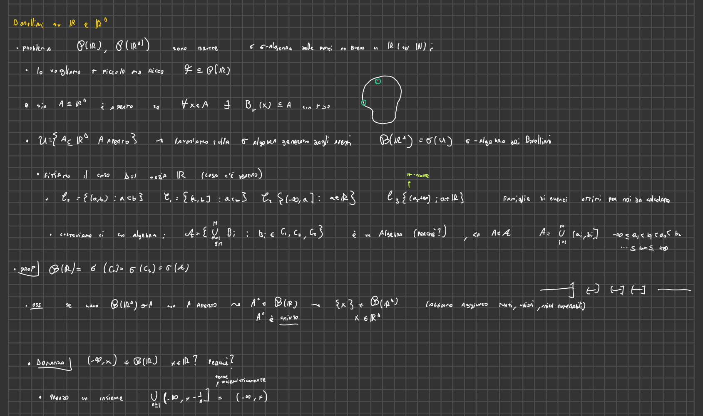
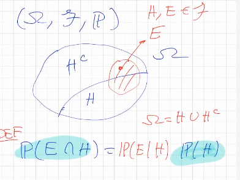
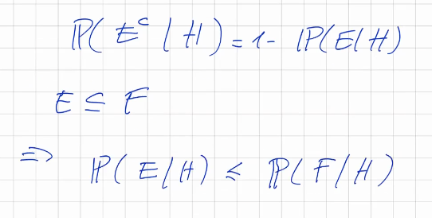
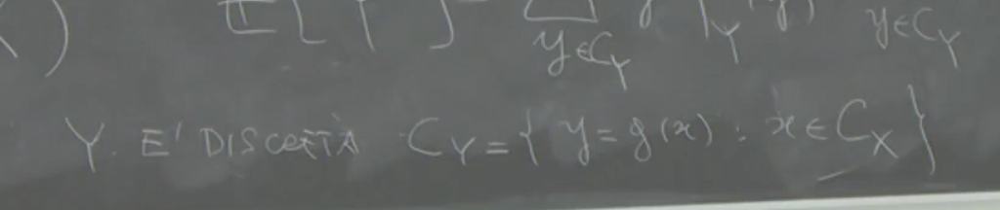
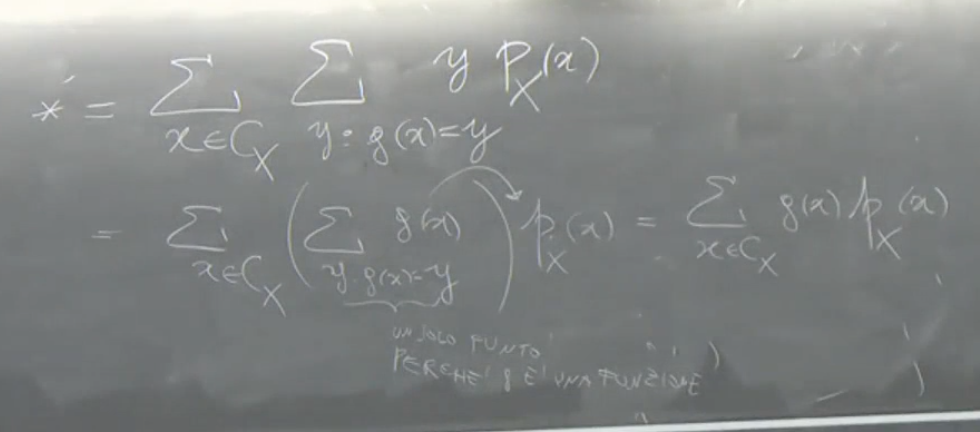
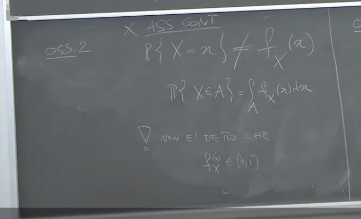
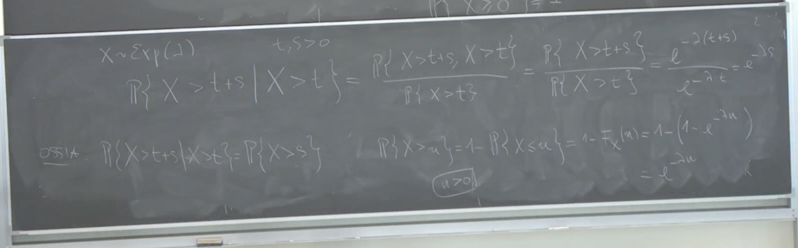

2025-02-18 13:22
Status: 1-18
Tags: sbobine probabilità
lez01’- Prob
Introduzione alla Probabilità e Teoria della Misura
Il professore introduce il concetto di probabilità, sottolineando come essa si applichi a fenomeni non descrivibili con leggi deterministiche. La probabilità, in sostanza, misura l’incertezza. L’approccio matematico moderno alla probabilità si basa sulla teoria della misura.
Concetti Chiave: Algebre, Misure, Misure di Probabilità (o probabilità)
Gli argomenti principali della lezione sono algebre, σ-algebre, misure e misure di probabilità. È importante, secondo il professore, fare tabula rasa delle concezioni elementari di probabilità per poter ricostruire i concetti in modo più rigoroso. L’astrazione è necessaria per inglobare sia il discreto che il continuo in un unico linguaggio matematico.
Misura: Definizione Intuitiva
Intuitivamente, una misura associa un valore a un insieme. Questo valore può rappresentare un’area, una lunghezza, un peso o un’incertezza.
Proprietà Fondamentale
Se si misurano due insiemi disgiunti A₁ e A₂ separatamente, la somma delle loro misure deve essere uguale alla misura della loro unione:
μ(A₁ ∪ A₂) = μ(A₁) + μ(A₂) se A₁ ∩ A₂ = ∅
Spazio Campionario (Ω)
-
Ω (Omega): Spazio Campionario (o Spazio degli Esiti):
- L’insieme di tutti i possibili risultati di un esperimento casuale.
- Insieme astratto, senza struttura particolare.
- Può essere finito, infinito numerabile, o continuo.
- Spesso non è esplicitamente definito, ma esiste implicitamente.
-
**ω (omega minuscola):
- Esito Elementare**: Un singolo elemento di Ω, un punto, una particolare realizzazione dell’esperimento.( Parametrizzazione del caso).
-
Eventi A: Sottoinsiemi di Ω A⊂Ω.
- Collezione di esiti elementari che soddisfano una condizione.
-
Evento Certo: L’insieme Ω stesso.
Esempi di Spazi Campionari:
- Insieme finito di punti: Ω = {1, 2, 3, …, 10}
- Numeri naturali non negativi: Ω = {0, 1, 2, …}
- Numeri reali: Ω = ℝ
- Spazio euclideo: Ω = ℝᵈ (vettori con componenti reali)
- Successioni: Ω = {x = (x₁, x₂, …): xᵢ ∈ {1, 2, …, m}}
Sottoinsiemi e Operazioni Insiemistiche
I sottoinsiemi di Ω rappresentano eventi. È fondamentale non confondere un punto (ω ∈ Ω) con un sottoinsieme.
Operazioni Fondamentali:
- Complementare: Aᶜ = {ω ∈ Ω: ω ∉ A} (tutti gli elementi di Ω che non appartengono ad A).
- È essenziale specificare l’insieme universo (Ω) quando si considera il complementare.
Algebre di Insiemi
Una classe (o famiglia) di sottoinsiemi di Ω si dice algebra se soddisfa le seguenti proprietà:
- Ω ∈ (l’insieme totale appartiene all’algebra).
- Se A ∈ , allora Aᶜ ∈ (se un insieme appartiene all’algebra, anche il suo complementare appartiene all’algebra).
- Se A₁, A₂ ∈ , allora A₁ ∪ A₂ ∈ (se due insiemi appartengono all’algebra, anche la loro unione appartiene all’algebra).
Proprietà Derivata
Se A è un’algebra e A₁, …, Aₙ ∈ A, allora ∪ᵢ₌₁ⁿ Aᵢ ∈ (l’unione finita di insiemi appartenenti all’algebra appartiene all’algebra). Questo si dimostra per induzione.
Sigma-Algebre (σ-algebre)
Una σ-algebra è un’algebra che è anche stabile rispetto a unioni numerabili. Formalmente, una classe di insiemi è una σ-algebra se soddisfa:
- Ω ∈
- Se A ∈ , allora Aᶜ ∈
- Se Aᵢ ∈ per i = 1, 2, …, allora ∪ᵢ₌₁^∞ Aᵢ ∈ (l’unione numerabile di insiemi appartenenti alla σ-algebra appartiene alla σ-algebra).
Conseguenze Importanti:
- Se è una σ-algebra, allora ∅ ∈ (l’insieme vuoto appartiene alla σ-algebra).
- 1. e 2. implicano che ma con
- Se è una σ-algebra, allora è anche un’algebra.
- La stabilità rispetto a unioni numerabili implica la stabilità rispetto a unioni finite, ma non viceversa.

Osservazione sulle Notazioni
Il professore userà la lettera per denotare una σ-algebra. In alcuni testi, si usa la lettera per indicare sia le algebre che le σ-algebre.
Insieme delle Parti
L’insieme delle parti (Ω) è l’insieme di tutti i sottoinsiemi di Ω. (Ω) è sempre una σ-algebra.
Caso Finito
Se Ω è un insieme finito, allora non c’è differenza tra algebra e σ-algebra. In questo caso, l’insieme delle parti (Ω) è finito, e quindi ogni famiglia di sottoinsiemi è finita.
Misure
Una misura è una funzione che associa un valore numerico a un insieme, quantificandone la “dimensione” in un certo senso.
Spazio Misurabile
Una coppia (Ω, ) o (Ω, ), dove Ω è uno spazio campionario e è un’algebra ( è una σ-algebra) su Ω, è chiamata spazio misurabile.
Misura Finitamente Additiva
Una funzione μ: → [0, +∞] è una misura finitamente additiva se soddisfa le seguenti proprietà:
- μ(∅) = 0
- Per ogni A₁, A₂ ∈ tali che A₁ ∩ A₂ = ∅, si ha μ(A₁ ∪ A₂) = μ(A₁) + μ(A₂)
- definire un algebra è servito a questo
- NOTA: μ non è una misura di un punto , ma di una famiglia di sottoinsiemi.
Misura (σ-additiva o completamente additiva)
Una funzione μ: → [0, +∞] è una misura (σ-additiva) se soddisfa le seguenti proprietà:
-
μ(∅) = 0
-
Se Aᵢ ∈ per i = 1, 2, … e Aᵢ ∩ Aⱼ = ∅ per ogni i ≠ j, allora:
μ(∪ᵢ₌₁^∞ Aᵢ) = ∑ᵢ₌₁^∞ μ(Aᵢ) -.
- se vale più infinito la somma, la misura sarà infinito
Terminologia
- Eventi: I sottoinsiemi di Ω sono spesso chiamati eventi.
- Evento certo: Ω (l’evento che si verifica sempre)
- Evento impossibile: ∅ (l’evento che non si verifica mai)
- Evento contrario: Aᶜ (il complementare di A)
Misure di Probabilità
Una misura di probabilità è una misura che associa a ogni evento un numero compreso tra 0 e 1, rappresentando la probabilità che l’evento si verifichi.
Probabilità Finitamente Additiva
Una funzione : A → è una probabilità finitamente additiva se soddisfa:
- P(∅) = 0 e P(Ω) = 1
- Per ogni A₁, A₂ ∈ tali che A₁ ∩ A₂ = ∅, si ha P(A₁ ∪ A₂) = P(A₁) + P(A₂)
Misura di Probabilità (σ-additiva)
Una funzione P: → è una misura di probabilità (σ-additiva) se soddisfa:
-
P(∅) = 0 e P(Ω) = 1
-
Se Aᵢ ∈ per i = 1, 2, … e Aᵢ ∩ Aⱼ = ∅ per ogni i ≠ j, allora:
Relazione tra Misure e Misure di Probabilità
Una misura di probabilità è un caso particolare di misura in cui i valori sono normalizzati tra 0 e 1 e la misura dello spazio totale è 1.
- definizione probabilità: è una misura sigma additiva tale per cui lo spazio totale vale omega
Proprietà Elementari delle Misure (e Misure di Probabilità)
Le seguenti proprietà valgono sia per le misure che per le misure di probabilità (nell’accezione di σ-additiva):
- Se A₁ ∩ A₂ = ∅, allora μ(A₁ ∪ A₂) = μ(A₁) + μ(A₂)
- questa proprietà appartiene alle unioni numerabili (σ- finite) si può dedurre valga anche per le σ-additive
- Se A ⊆ B, allora μ(A) ≤ μ(B) (monotonia)
- Se A ⊆ B significa B implica A
Terminologia Probabilistica Aggiuntiva
- Se A ∩ B = ∅, si dice che A e B sono incompatibili.
Misure di Probabilità: Proprietà Fondamentali e Dimostrazioni
se P è una mdp (misura di probabilità) → P è una misura le proprietà sulle misure valgono per P.
Il professore spiega le proprietà fondamentali delle misure di probabilità, sottolineando che queste proprietà sono valide in generale per le misure su sigma-algebre e sono cruciali per la teoria della probabilità.
1. Additività Completa e Finitamente Additiva (il cambio da P a un mu è colpa del prof…)
-
Definizione: Una misura di probabilità (P) su uno spazio campionario (\Omega) è completamente additiva se, per ogni successione di eventi mutuamente disgiunti , vale:
-
Additività finita: Se la proprietà vale solo per un numero finito di eventi disgiunti, allora la misura è finitamente additiva.
-
Dimostrazione che l’additività completa implica quella finita:
-
Siano e eventi disgiunti. Possiamo scrivere la loro unione come un’unione infinita, aggiungendo l’insieme vuoto infinite volte:
-
Per l’additività completa:
-
Dato che :
-
Questo dimostra che se una misura è completamente additiva, allora è anche finitamente additiva.
-
2. Monotonia
- Definizione: Se (), allora ().
- Dimostrazione:
-
Se , possiamo scrivere B come l’unione disgiunta di A e :
-
Quindi,
-
per additività finita.
-
Dato che per definizione allora:
-

3. Probabilità del Complementare
- Definizione sia
- : ()
- dove () è il complementare di () rispetto a ().
- : ()
- Dimostrazione:
- Sappiamo che () e ().
- Quindi, per additività finita
- ().
- Da cui:
4. Probabilità dell’Unione di Due Eventi
- Definizione: sia
- Per due eventi () e (), vale:
- Dimostrazione:
-
Si decompone () in tre parti disgiunte: (), () e ().
-
Quindi per additività finita:
-
Notiamo che
- , che sono disgiunti
- , che sono disgiunti
-
Analogamente:
-
Sostituendo:
-
Semplificando:
-
Il professore sottolinea che sommare () e () significa contare due volte l’intersezione, quindi la si deve sottrarre.
-
Sigma-algebra Generata da una Famiglia di Insiemi
- Definizione: Data una famiglia di sottoinsiemi () di (),
- la sigma-algebra generata da (), indicata con (), è la più piccola sigma-algebra che contiene ().
- Esempio:
- Sia () e (). () non è un’algebra perché non contiene () né l’insieme vuoto.
- Per generare la sigma-algebra, dobbiamo aggiungere:
- .
- Il complementare di (), che è ().
- Il complementare di (), che è ().
- {1,3} che è il complementare di {2}
- {2} che è il complementare di {1,3}
- L’insieme vuoto
- Quindi, (), che è l’insieme delle parti di ().
- Esercizio Proposto
- Esercizio: Dato () e (), trovare la sigma-algebra generata da ().
- Osservazione: In questo caso, la sigma-algebra generata non sarà l’insieme delle parti, suggerendo che non sempre si è in grado di misurare tutti i sottoinsiemi dello spazio campionario. References
2025-02-18 08:16
Status: revisione_in_corso flashcard_finite riscritto_zero
Tags:probabilità sbobine
lez02-Prob
Definizione di Probabilità: Approccio Alternativo
Il professore introduce una definizione di probabilità leggermente diversa da quella standard, ma equivalente. Questa definizione alternativa non richiede esplicitamente che la probabilità dell’insieme vuoto sia zero.
Definizione
Sia (Ω, F) uno spazio misurabile, dove Ω è lo spazio campionario e F è una σ-algebra di eventi. Una funzione P: ℱ →|0,1| è una misura di probabilità se soddisfa le seguenti condizioni:
-
P(Ω) = 1 (la probabilità dell’evento certo è 1)
-
σ-additività (additività completa): Per ogni successione di eventi Aᵢ ∈ F tali che Aᵢ ∩ Aⱼ = ∅ per i ≠ j (eventi incompatibili), vale:
P(∪ᵢ Aᵢ) = ∑ᵢ P(Aᵢ)

Equivalenza tra le Definizioni
La definizione standard di misura di probabilità include anche la condizione che P(∅) = 0. Il professore dimostra che la definizione alternativa è equivalente a quella standard, mostrando che la condizione P(∅) = 0 può essere derivata dalle altre proprietà.
Dimostrazione che P(∅) = 0
- 1→2
- 2→1
-
Si esprime l’insieme vuoto come unione numerabile di insiemi vuoti:
∅ = ∪ᵢ ∅
-
Sia p = P(∅). Per la σ-additività, si ha:
p = P(∅) = P(∪ᵢ ∅) = ∑ᵢ P(∅) = ∑ᵢ p
-
Quindi, p = ∑ᵢ p. Questo è possibile solo se p = 0. Se p fosse strettamente positivo, la somma di infiniti valori positivi divergerebbe.
-
Pertanto, P(∅) = 0.
-
Commenti
- Questa dimostrazione mostra che la condizione P(∅) = 0 è ridondante nella definizione alternativa, poiché può essere derivata dalle altre proprietà.
- L’obiettivo del professore è di fornire una caratterizzazione utile per confrontare diverse definizioni di probabilità, ad esempio quella trovata nel libro di Protter.
Misure Finite e σ-Finite
Il professore introduce le definizioni di misura finita e misura σ-finita.
Misura Finita
Una misura μ su una σ-algebra F è detta finita se la misura dell’insieme totale è finita:
μ(Ω) < ∞
Esempio: Una misura di probabilità è una misura finita perché P(Ω) = 1.
Misura σ-Finita
Una misura μ su una σ-algebra ℱ è detta σ-finita se esiste una famiglia numerabile di insiemi misurabili Bᵢ ∈ F tale che:
- Gli insiemi Bᵢ sono disgiunti: Bᵢ ∩ Bⱼ = ∅ per i ≠ j
- L’unione degli insiemi Bᵢ è l’intero spazio: ∪ᵢ Bᵢ = Ω
- La misura di ogni insieme Bᵢ è finita: μ(Bᵢ) < ∞ per ogni i
Una famiglia di insiemi con queste proprietà è chiamata partizione numerabile o partizione misurabile numerabile dello spazio.

Commenti
- La misura σ-finita è una generalizzazione della misura finita. Permette di lavorare con spazi di misura infinita, purché possano essere suddivisi in una quantità numerabile di sottoinsiemi di misura finita.
- Le misure che verranno utilizzate nel corso avranno spesso questa proprietà. Ad esempio, la misura di Lebesgue su ℝⁿ è σ-finita perché ℝⁿ può essere suddiviso in una quantità numerabile di cubi con lato di lunghezza finita.
rifattorizzo
Esempi di Misure di Probabilità
Il professore presenta tre esempi semplici di misure, che servono come base per costruire esempi più complessi.
1. Delta di Dirac (Massa Puntuale)
Sia Ω uno spazio qualsiasi e ω₀ ∈ Ω un punto fissato. La misura delta di Dirac δω₀ è definita come:
δω₀(A) = { 1 se ω₀ ∈ A { 0 se ω₀ ∉ A
δω₀(A) assegna probabilità 1 se l’insieme A contiene il punto ω₀ e probabilità 0 altrimenti.
- Commento: La delta di Dirac è una misura di probabilità degenere, perché assegna probabilità 1 a un singolo punto e 0 a tutto il resto. Dal punto di vista probabilistico, rappresenta un evento certo.
2. Misura di Conteggio
Sia Ω un insieme al più numerabile di punti ωᵢ. La misura di conteggio μ è definita come:
μ(A) = ∑ᵢ δωᵢ(A) = |{ωᵢ ∈ A}|
dove |{ωᵢ ∈ A}| indica il numero di elementi in A.
-
In altre parole, μ(A) conta il numero di punti ωᵢ che appartengono all’insieme A.
-
Esempio: Sia Ω = ℕ (numeri naturali) e A = {1, 3, 5}. Allora μ(A) = 3.
-
in questo caso μ(Ω) sarebbe infinito → non sarebbe una misura finita
3. Misura Discreta Generale
Sia Ω un insieme al più numerabile di punti ωᵢ e siano cᵢ dei numeri reali positivi. La misura discreta μ è definita come:
μ(A) = ∑{cᵢ : ωᵢ ∈ A}
In questo caso, ogni punto ωᵢ ha un peso cᵢ. La misura di un insieme A è la somma dei pesi dei punti che appartengono ad A.
- Se ∑ᵢ cᵢ = 1, allora μ è una misura di probabilità.
- Se ∑ᵢ cᵢ < ∞, allora μ è una misura finita.
- Se ∑ᵢ cᵢ = ∞, allora μ non è una misura finita.
Commenti
- Questi esempi mostrano come costruire misure a partire da punti isolati.
- Le misure discrete sono fondamentali in molti contesti probabilistici.
Sigma Algebra Generate da Famiglie di Insiemi
Il professore introduce il concetto di σ-algebra generata da una famiglia di insiemi.
Definizione
Data una famiglia di insiemi E, la σ-algebra generata da E, indicata con σ(E), è la più piccola σ-algebra che contiene tutti gli insiemi in E.
In altre parole, σ(E) è l’intersezione di tutte le σ-algebre che contengono E.
σ(E) = ∩{ℱ : ℱ è una σ-algebra e E ⊆ ℱ}

Proprietà
Se E₁ ⊆ E₂, allora σ(E₁) ⊆ σ(E₂).
Esempio
Sia Ω = {1, 2, 3} e E = {{1, 2}}. Allora la σ-algebra generata da E è:
σ(E) = {∅, Ω, {1, 2}, {3}}
Commenti
- La σ-algebra generata da una famiglia di insiemi è un concetto fondamentale per costruire σ-algebre complesse a partire da insiemi più semplici.
- Questo concetto è particolarmente importante quando si lavora con spazi non numerabili, come la retta reale.
Probabilità su Spazi Numerabili (o finiti)
Il professore discute come definire misure di probabilità su spazi numerabili.
Partizioni Numerabili
Una partizione numerabile di uno spazio Ω è una famiglia numerabile di insiemi disgiunti H = {Hᵢ} tali che ∪ᵢ Hᵢ = Ω.
Sigma Algebra Generata da una Partizione Numerabile
La σ-algebra generata da una partizione numerabile H è l’insieme di tutte le unioni (finite o numerabili) di elementi di H.
Caratterizzazione delle Misure di Probabilità
Sia F la σ-algebra generata da una partizione numerabile H. Per definire una misura di probabilità P su F, è sufficiente assegnare un peso pᵢ ≥ 0 a ogni elemento Hᵢ della partizione, tale che ∑ᵢ pᵢ = 1.
La probabilità di un insieme A ∈ F è data da:
P(A) = ∑{pᵢ : Hᵢ ⊆ A}

Esempio
Sia Ω = ℕ e H = {{1}, {2}, {3}, …}. Una misura di probabilità su F = P(ℕ) è completamente determinata dai pesi pᵢ = P({i}), con pᵢ ≥ 0 e ∑ᵢ pᵢ = 1.
- Probabilità Uniforme su un Insieme Finito: Se Ω = {ω₁, …, ωₘ}, si pone P(ωᵢ) = 1/m per ogni i.
- Distribuzione Geometrica: Sia Ω = ℕ₀ = {0, 1, 2, …} e sia 0 < θ < 1. Si definisce P(i) = θⁱ (1 - θ) per i ∈ ℕ₀. Questa è la distribuzione geometrica.

Estensione e Unicità
Il professore introduce i concetti di estensione* e unicità* delle misure}.
Motivazione
Si vuole costruire misure* su spazi non* numerabili*, come la retta* reale*, che soddisfino certe proprietà intuitive. Ad esempio, si vorrebbe una misura μ su ℝ tale che μ([a, b]) = b - a per ogni intervallo* [a, b].
Teorema di Estensione di Carathéodory
Sia A* un’algebra* su Ω e sia μ una misura* σ-additiva* su A*. Allora esiste un’estensione* μ** di μ a σ(A)* che è una misura σ-additiva*. Se μ è σ-finita*, allora l’estensione è unica*.
- formulazione che usiamo noi

Teorema di Unicità
Siano P e Q due misure* di probabilità* su una σ-algebra F. Sia C* una classe* di insiemi* tale che σ(C) = F. Se P(A) = Q(A) per ogni A ∈ C, allora P = Q. In altre parole, se due misure di probabilità coincidono* su una classe* che genera la σ-algebra*, allora coincidono* su tutta* la σ-algebra*.
P-Classe
Una classe C di insiemi è detta P-classe se è stabile* per intersezioni* finite*. Ovvero, se A₁, …, Aₙ ∈ C, allora A₁ ∩ … ∩ Aₙ ∈ C.
- Esempio di P-Classe: La famiglia di semirette della forma (-∞, x]* con x ∈ ℝ è una P-classe.
References
2025-02-19 10:24
_Status: revisione_finita flashcard_finite riscritto_finito
_Tags: probabilità sbobine
lez03- Prob
Misure di Probabilità su Insiemi Numerabili
Il professore introduce il concetto di misure di probabilità definite su insiemi numerabili, finiti o, più in generale, su spazi “misurabilmente generali”.
Caso in cui Ω è un Insieme Finito
- Proposizione : Se =Ω è un insieme finito* e F è la σ-algebra delle parti di Ω, una misura* di* probabilità* P* su F assegna una probabilità* a ogni sottoinsieme* di Ω* (l’insieme* delle* parti*) .
-
Se P è una misura di probabilità su F, e si definisce pᵢ* come la probabilità del singoletto* {ωᵢ},* dove gli ωᵢ sono gli elementi di Ω ordinati* convenzionalmente* (1, 2, 3, …), allora la probabilità di ogni evento* A ⊆ Ω può essere scritta come la somma* delle probabilità* dei singoletti* contenuti* in A*.
- con numerabile* o finito* e
- se è misura* di probabilita* di e per i=1,2,3 →
P(A) = ∑ᵢ pᵢ, per tutti gli i tali che ωᵢ ∈ ADove:
P(A)è la probabilità dell’evento A.pᵢè la probabilità del singoletto {ωᵢ}.- La sommatoria è estesa a tutti gli indici
itali che l’elemento ωᵢ appartiene all’insieme A.
- Caratterizzazione completa: Una misura di probabilità sulla σ-algebra* delle parti* è completamente* caratterizzata* dalle probabilità* dei singoletti*. Conoscendo le probabilità di ogni singolo* elemento* di Ω, si può determinare la probabilità* di qualsiasi* evento.
- Condizione: Data una successione pᵢ ≥ 0 tale che ∑ᵢ pᵢ = 1, si può definire una misura di probabilità P su come:
- È fondamentale che questa funzione sia definita su F.
fatto fino a qua
Teorema di Unicità per Misure di Probabilità
Il professore introduce il teorema di unicità per le misure di probabilità.
-
Teorema (caso di misura di probabilità): Se C è una P-classe che genera la σ-algebra F, e P₁ e P₂ sono due misure di probabilità su F, se P₁(A) = P₂(A) per ogni evento A nella P-classe C, allora P₁ = P₂.
In termini più formali:
- Sia C una P-classe tale che σ(C) = F.
- Siano P₁ e P₂ due misure di probabilità su F.
- Se P₁(A) = P₂(A) ∀ A ∈ C, allora P₁ = P₂.
-
Estensione a Misure Sigma-Finite: Il teorema si estende a misure sigma-finite con condizioni aggiuntive:
- Siano μ₁ e μ₂ due misure sigma-finite su una σ-algebra F.
- Sia C una classe tale che la σ-algebra generata da C sia proprio F, cioè σ(C) = F.
- Esista una successione di eventi Eᵢ ∈ C tali che Eᵢ ∩ Eⱼ = ∅ per i ≠ j e ⋃ᵢ Eᵢ = Ω.
- μ₁(Eᵢ) < ∞ per ogni i.
- Se μ₁(A) = μ₂(A) per ogni A ∈ C, allora μ₁ = μ₂.
Importante: Per misure che non sono di probabilità, è necessario che le misure siano sigma-finite e che la P-classe contenga una partizione numerabile tale che le misure degli insiemi nella partizione siano finite.
Esempio: Famiglia di Intervalli e Misura di Lebesgue
Discussione di un esempio riguardante la famiglia di intervalli su e la misura di Lebesgue.
- Classe C₀: C₀ è la famiglia di intervalli aperti (a, b). Questa non è una P-classe, perché l’intersezione di due intervalli disgiunti è l’insieme vuoto, che non appartiene a C₀.
- Classe C₀ estesa: Aggiungendo l’insieme vuoto a C₀, si ottiene una P-classe.
- Misura di Lebesgue: La misura di Lebesgue non funziona direttamente con C₀, ma con la classe estesa, a causa della condizione di sigma-finità.

Continuità della Misura di Probabilità
- MANCA UNA DIMOSTRAZIONE

Il professore introduce il concetto di continuità per le misure di probabilità.
Convergenza Monotona di Eventi
- Definizione: Una successione di eventi Aₙ converge in modo monotono crescente a un evento A se Aₙ ⊆ Aₙ₊₁ per ogni n, e A = ⋃ₙ Aₙ.
- Definizione: Aₙ converge in modo monotono decrescente a A se Aₙ ⊇ Aₙ₊₁ per ogni n, e A = ⋂ₙ Aₙ.
Teorema di Continuità
-
Teorema: Se P è una misura di probabilità su F, allora:
-
Per ogni successione Aₙ di eventi in F che converge in modo monotono crescente ad A, si ha che:
lim (n→∞) P(Aₙ) = P(A) -
Per ogni successione Aₙ di eventi in F che converge in modo monotono decrescente ad A, si ha che:
lim (n→∞) P(Aₙ) = P(A) -

-
-
-
Teorema di continuità per misure di probabilità
-
Enunciato: Sia una -algebra su . Se è una misura di probabilità su , allora:
- per ogni successione di eventi in che converge ad monotonicamente (crescente o decrescente).
- Supponiamo che sia una funzione da a tale che e per ogni con . Allora è -additiva se e solo se per ogni successione di eventi in convergente monotonicamente all’insieme vuoto, .
-
Dimostrazione (parte 1, caso crescente):
- Sia una successione di eventi in tale che per ogni , e sia .
- Definiamo una nuova successione di eventi tale che e per ogni . Gli eventi sono a due a due incompatibili.
- Si ha che , quindi (per additività finita).
- Inoltre, , quindi (per -additività).
- Prendendo il limite per di , si ottiene .
- Quindi, converge a .
-
Equivalenza con la Sigma-Additività
- Teorema: Sia P una funzione da F a tale che P(Ω) = 1 e P(A₁ ∪ A₂) = P(A₁) + P(A₂) per ogni A₁ e A₂ disgiunti. Allora
- P è sigma-additiva se e solo se per ogni successione Bₙ convergente all’insieme vuoto, si ha che lim (n→∞) P(Bₙ) = 0.
- dimostrazione
- P è sigma-additiva se e solo se per ogni successione Bₙ convergente all’insieme vuoto, si ha che lim (n→∞) P(Bₙ) = 0.
Subadditività Finita e Numerabile
-
MANCA LA DIMOSTRAZIONE

-
Teorema: Sia P una misura di probabilità su F e sia {Aₖ} una successione di eventi in F. Allora:
-
Subadditività finita:
P(⋃ₖ₌₁ⁿ Aₖ) ≤ ∑ₖ₌₁ⁿ P(Aₖ) -
Subadditività completa:
P(⋃ₖ₌₁^∞ Aₖ) ≤ ∑ₖ₌₁^∞ P(Aₖ)
-
-
Caso di eventi disgiunti: Se gli Aₖ sono a due a due disgiunti, vale l’uguaglianza.
-
Formula per due eventi: Per due eventi qualsiasi A e B:
P(A ∪ B) = P(A) + P(B) - P(A ∩ B) -
-
Subadditività finita e numerabile di una misura di probabilità
-
Enunciato: Sia una misura di probabilità su e una successione di eventi in . Allora:
- (subadditività finita).
- (subadditività completa).
-
Dimostrazione:
- La subadditività finita si dimostra per induzione. Per , .
- Per il passo induttivo, supponiamo che valga per e dimostriamo per :
- .
- Per la subadditività completa, sia . Allora converge monotonicamente (crescendo) a .
- Per la continuità della misura di probabilità, .
- Dalla subadditività finita, .
- Quindi, .
- Pertanto, .
-

Sigma-algebra di Borel su e
- 
Introduzione della sigma-algebra di Borel su R.
-
Definizione: La sigma-algebra di Borel (B(R)) è la sigma-algebra generata dagli insiemi aperti di R.
-
Aperti in R: Un insieme A ⊆ R è aperto se per ogni x ∈ A esiste un intervallo aperto (x - ε, x + ε) ⊆ A.
-
Obiettivo: Restringere l’attenzione agli insiemi boreliani, che includono intervalli, semirette e altri insiemi “ragionevoli”.
-
Classi di Insiemi: Definizione di diverse classi di insiemi che generano la sigma-algebra di Borel:
- C₀: Intervalli aperti (a, b).
- C₁: Intervalli chiusi [a, b].
- C₂: Semirette (-∞, x].

-
Algebra generata da C₁ ∪ C₂ ∪ C₃: Si può costruire un’algebra A a partire da C₁, C₂, e C₃, formata da unioni finite di elementi di queste classi. Gli elementi di A sono unioni di intervallini di vario tipo, eventualmente con semirette.
-
Equivalenza tra generatori: B(R) può essere ottenuta generando la sigma-algebra a partire da C₀ o C₂.
B(R) = σ(C₀) = σ(C₂) = σ(A) -
Motivazioni: Questo risultato è utile per:
- Avere un’idea concreta degli insiemi boreliani.
- Semplificare le dimostrazioni, usando il teorema di Caratheodory per estendere le misure da un’algebra alla sigma-algebra generata.
- Identificare misure di probabilità, mostrando che coincidono su una P-classe che genera B(R).
-
Chiusi: Poiché la sigma-algebra di Borel contiene gli aperti, contiene anche i chiusi (complementari degli aperti). Quindi, contiene anche i singoli punti.
-
Semirette: Le semirette del tipo (-∞, x] appartengono a B(R). Questo si può dimostrare approssimando la semiretta con unioni numerabili di intervalli chiusi.

-
- Equivalenza di generatori della -algebra di Borel su
- Enunciato: Sia la -algebra di Borel su . Allora: dove:
- è la famiglia degli intervalli aperti .
- è la famiglia degli intervalli chiusi .
- è la famiglia delle semirette .
- Dimostrazione (solo ):
- Per definizione, , dove è la famiglia degli aperti di .
- Passo 1: . Quindi .
- Passo 2: Ogni aperto si può scrivere come un’unione numerabile di intervalli aperti.
- Quindi, perché è una -algebra e contiene tutti gli intervalli aperti, quindi deve contenere anche le loro unioni numerabili.
- Applicando di nuovo la proprietà che se una classe è contenuta nell’altra, quando generate le sigma algebre, le due sigma algebre sono contenute. Quindi .
- Concludiamo che .
- Combinando i due passi, otteniamo .


Sigma-algebra di Borel su Rᵈ
-
 Estensione del concetto di sigma-algebra di Borel a Rᵈ.
Estensione del concetto di sigma-algebra di Borel a Rᵈ. -
Definizione: La sigma-algebra di Borel su Rᵈ (B(Rᵈ)) è la sigma-algebra generata dagli insiemi aperti di Rᵈ.
-
Rettangoli aperti: Generalizzazione degli intervalli aperti tramite rettangoli aperti, prodotti cartesiani di intervalli aperti.
-
Classi di Insiemi:
- D₀: Rettangoli aperti in Rᵈ, prodotti cartesiani di intervalli aperti.
- C₂: “Quadranti” in Rᵈ, insiemi della forma (-∞, x], dove x ∈ Rᵈ. Sono insiemi di punti y ∈ Rᵈ tali che ogni coordinata di y è minore o uguale della corrispondente coordinata di x.
- D₀: Rettangoli aperti in Rᵈ, prodotti cartesiani di intervalli aperti.
-
Equivalenza tra generatori: B(Rᵈ) può essere generata a partire da D₀ o da C₂.
B(Rᵈ) = σ(C_0) = σ(D₀) = σ(C₂) -
Conseguenza: Se due misure di probabilità P e Q su B(Rᵈ) coincidono su tutti i quadranti, allora sono uguali.
-
MANCA UNA DELUCIDAZIONE


Misura di Lebesgue
-
Introduzione della misura di Lebesgue, che rappresenta lunghezza, area o volume.
-
Teorema: Esiste un’unica misura sigma-finita μ su B(R) tale che μ((a, b]) = b - a per ogni a, b ∈ R.
-
Generalizzazione a Rᵈ: Esiste un’unica misura sigma-finita μ su B(Rᵈ) tale che, per ogni rettangolo R = (a₁, b₁] × … × (a𝒹, b𝒹], si ha μ(R) = (b₁ - a₁) * … * (b𝒹 - a𝒹).
-
Misura di Lebesgue: Questa misura si chiama misura di Lebesgue e non è una misura di probabilità.
-
Costruzione: Per costruire la misura di Lebesgue, si definisce una funzione finitamente additiva su un’algebra di insiemi (unioni finite di intervallini) e poi la si estende usando il teorema di Caratheodory.
-
Notazione: La misura di Lebesgue è definita sui boreliani di Rᵈ.

References
2025-02-23 14:35
_Status: flashcard_finite riscritto_finito revisione_finita
_Tags: probabilità sbobine
prob- Lez04
Sigma-algebra generata da una famiglia di insiemi
Il professore spiega un dubbio frequente riguardo alla sigma-algebra generata da una famiglia di insiemi.
Dubbio comune
Molti studenti si chiedono come la sigma-algebra di Borel () sia generata dagli aperti () o, equivalentemente, dagli intervalli.
Chiarimento del professore
-
Concetto di generazione: Il professore ricorda che generare una sigma-algebra a partire da una classe di insiemi significa che la sigma-algebra risultante conterrà molti più elementi della classe di partenza.
- Esempio: Se si parte da un singolo evento , la sigma-algebra generata conterrà , il suo complementare , l’insieme vuoto e l’insieme totale .
- Se si parte da due eventi e , la sigma-algebra conterrà , , , , , , e così via.
-
Sigma-algebra dei Boreliani: La sigma-algebra dei Boreliani () contiene molti più insiemi degli intervalli aperti da cui è generata. Include tutti gli insiemi chiusi, i punti singoli, le semirette, gli intervalli semiaperti, ecc.
-
Non confondere la famiglia con la sigma-algebra generata: È fondamentale non confondere la famiglia di insiemi di partenza con la sigma-algebra che essa genera. La sigma-algebra generata è generalmente più grande della famiglia di partenza, a meno che la famiglia non sia già una sigma-algebra.
-
Come verificare se un insieme appartiene alla sigma-algebra generata: Per capire se un insieme appartiene alla sigma-algebra generata, si deve verificare se può essere ottenuto tramite operazioni di complementazione, unione numerabile e intersezione numerabile a partire dagli insiemi della famiglia generatrice.
- Prendere un elemento nella famiglia, e verificare se anche il suo complementare appartiene alla sigma-algebra.
- Prendere due elementi e e verificare se la loro unione e la loro intersezione appartengono alla sigma-algebra. L’appartenenza dell’intersezione discende dalle proprietà di algebra/sigma-algebra.
Misura di Lebesgue e sue proprietà
Il professore riprende la lezione precedente introducendo la misura di Lebesgue su .
Definizione e proprietà
-
Misura di Lebesgue su : Nel caso di , la misura di Lebesgue di un intervallo è esattamente la sua lunghezza. La misura di Lebesgue di tutto è . Si ricorda che la misura di Lebesgue è sigma-finita.
-
Misura di Lebesgue di un punto: La misura di Lebesgue di un singolo punto è zero, ovvero per ogni . Questo vale anche per misure di probabilità assolutamente continue.
-
Proprietà generali:
- In , la misura di Lebesgue di un punto è zero.
- In , la misura di Lebesgue di un piano è zero.
- Più in generale, in , la misura di Lebesgue di qualsiasi iperpiano di dimensione strettamente minore di è zero ()
Esempio
Il professore propone un esempio in :
- Consideriamo due rette nel piano. Qual è la misura di Lebesgue della loro unione?
- Soluzione: Poiché ogni retta ha misura di Lebesgue zero e la misura di Lebesgue è sigma-additiva, la misura dell’unione delle due rette è la somma delle loro misure, che è . Matematicamente: .
Esempi di Spazi di Probabilità
Il professore introduce due esempi per illustrare i concetti di spazi di probabilità e misure.
Esempio 1: Dado a Sei Facce (spazio finito)
- Spazio Campionario: , che rappresenta i possibili risultati del lancio di un dado a sei facce.
- Probabilità: Ogni elemento ha la stessa probabilità di verificarsi, ovvero per .
- Misura di Probabilità: La funzione di probabilità è definita sull’insieme delle parti di , , e assegna a ogni sottoinsieme di la somma delle probabilità dei suoi elementi con Questa è una misura.
- Modellizzazione: Questo esempio rappresenta il lancio di un dado non truccato, dove ogni faccia ha la stessa probabilità di uscire. Si fanno delle scelte di modellizzazione, come assumere che il dado non venga rubato o distrutto.
Esempio 2: Cerchio Unitario (spazio non numerabile)
- Spazio Campionario: , che rappresenta l’insieme dei punti all’interno di un cerchio di raggio 1.
- Misura di Probabilità: Si vuole definire una misura di probabilità che formalizzi l’idea di scegliere un punto a caso uniformemente all’interno del cerchio.
- Sigma-algebra: Si utilizza la sigma-algebra dei Boreliani su (), ristretta a .
- Definizione della Misura: (abbiamo bisogno di una misura non discreta) Si parte dalla misura di Lebesgue () e si definisce la misura di probabilità come: dove è un insieme misurabile e è l’area del cerchio unitario.
- Uniformità: Questa misura di probabilità è uniforme, nel senso che la probabilità di un piccolo disco attorno a un punto è proporzionale all’area del disco, indipendentemente dalla posizione del punto all’interno del cerchio.
- Eventi: Gli eventi sono sottoinsiemi di che appartengono alla sigma-algebra.
- Esempio di Evento: Si consideri l’evento = “il diametro passante per il punto scelto interseca il settore tra le ore 12 e le ore 3”. Per calcolare la probabilità di , si deve tradurre questo evento in un sottoinsieme misurabile di . Questo sottoinsieme è l’unione del primo e terzo quadrante.
Probabilità Condizionata e Indipendenza
Il professore introduce i concetti di probabilità condizionata e indipendenza.
Spazio Misurabile e Spazio di Probabilità
- Uno spazio misurabile è una coppia , dove è lo spazio campionario e è una sigma-algebra su .
- Uno spazio di probabilità è una terna , dove è uno spazio misurabile e è una misura di probabilità su .
Probabilità Condizionata
- 
- Siano e due eventi in , con . La probabilità condizionata di dato è definita come:
- Interpretazione: rappresenta la probabilità che l’evento si verifichi, dato che l’evento si è verificato. In altre parole, si restringe l’attenzione all’universo e si valuta la probabilità di in questo universo ristretto.

Proprietà della Probabilità Condizionata
- è una misura di probabilità: Fissato , la funzione è una misura di probabilità su . (la probabilità condizionata è una funzione rispetto a E) Questo significa che soddisfa gli assiomi di una misura di probabilità:
Per dimostrare che questa applicazione è una misura di probabilità su , dobbiamo verificare tre proprietà fondamentali:
-
Non negatività: Questo è vero perché sia che sono non negativi, e quindi il loro rapporto è non negativo.
-
Normalizzazione: Dimostrazione:
-
Additività completa: Sia una successione di eventi disgiunti. Dobbiamo dimostrare che:
- Iniziamo scrivendo la definizione:
- Usiamo la proprietà distributiva dell’intersezione rispetto all’unione:
- Poiché gli sono disgiunti, anche gli sono disgiunti. Quindi, possiamo usare l’additività completa della probabilità P:
- Riscriviamo ogni termine usando la definizione di probabilità condizionale:
- Quindi, abbiamo dimostrato l’additività completa:
Corollario
Ogni proprietà che vale per una misura di probabilità vale anche per la probabilità condizionale quando si tiene fisso il condizionante. Ad esempio:
- per ogni .
- .
- Se sono eventi disgiunti, allora .
-  - intersezione e unione godono della proprietà distributiva
-
-
- intersezione e unione godono della proprietà distributiva
-
- 
- OGNI probabilità che sappiamo valere per una misura di probabilità vale per la probabilità condizionata quando teniamo fisso il condizionante
- esempio:
Formula delle Probabilità Totali
- Sia una partizione numerabile di , ovvero per e , con per ogni . Allora, per ogni evento :
Caso Generale: Partizione Numerabile
-
Definizione di partizione: Sia una partizione numerabile di . Questo significa che:
- per ogni (ogni è un evento misurabile)
- (l’unione di tutti gli è l’intero spazio campionario)
- per (gli sono a due a due disgiunti)
- per ogni
-
Decomposizione dell’evento E: L’evento E può essere espresso come l’unione delle intersezioni di E con gli elementi della partizione:
-
Additività completa: Poiché gli eventi sono disgiunti, possiamo scrivere:
-
Utilizzo della probabilità condizionale: Usando la definizione di probabilità condizionale:
-
Formula generale delle probabilità totali: Sostituendo nella formula per :
Questa formula esprime la probabilità di E come la somma delle probabilità condizionate di E dato , pesate per le probabilità di .
Caso Semplice: Partizione in Due Eventi
-
Decomposizione dell’evento E: L’evento E può essere espresso come l’unione di due eventi mutuamente esclusivi: dove rappresenta il complemento di H.
-
Additività: Siccome e sono disgiunti, possiamo scrivere:
-
Utilizzo della probabilità condizionale: Ricordando la definizione di probabilità condizionale: e quindi Allo stesso modo:
-
Formula delle probabilità totali: Sostituendo nella formula per :
Questa formula permette di calcolare la probabilità di E usando le probabilità condizionate e le probabilità degli eventi H e il suo complemento.
Teorema di Bayes
- Nelle stesse ipotesi della formula delle probabilità totali, per ogni nella partizione e per ogni evento con :
Esempio del Test Clinico
- Si consideri un test clinico per una malattia. Siano:
- = “il test risulta positivo”.
- = “il paziente è malato”.
- = “il paziente è sano”.
- Si conoscono le seguenti probabilità condizionate:
- = probabilità che il test sia positivo dato che il paziente è malato (sensibilità del test).
- = probabilità che il test sia positivo dato che il paziente è sano (1 - specificità del test).
- = probabilità a priori che un individuo nella popolazione sia malato (prevalenza della malattia).
- Si vuole calcolare , ovvero la probabilità che il paziente sia effettivamente malato dato che il test è risultato positivo. Utilizzando il teorema di Bayes:
- dove .
Formulazione del Teorema di Bayes
Dati: , e , si vuole calcolare .
Teorema:
Sia una partizione numerabile di , tale che per ogni i. Allora, la probabilità condizionata può essere calcolata come:
Dimostrazione:
Il denominatore dell’espressione sopra è equivalente a per il teorema delle probabilità totali. Quindi:
A destra dell’equazione, abbiamo solo termini noti.
Osservazioni Importanti
- Inversione delle Probabilità: Il teorema permette di “invertire” le probabilità, calcolando a partire da e .
- Statistica Bayesiana: Questo teorema è alla base della statistica Bayesiana.
- Terminologia Statistica:
- è chiamata verosimiglianza (likelihood).
- è la distribuzione iniziale (prior).
- è la distribuzione finale (posterior).
- Meccanismo di Apprendimento: Il teorema può essere visto come un meccanismo di apprendimento. rappresenta la conoscenza iniziale, è il modello, e è ciò che si apprende dopo aver osservato l’evento E.
- Necessità di una Struttura Probabilistica: Per fare questi calcoli, è fondamentale avere uno spazio , una -algebra e una misura di probabilità ben definiti, anche se poi l’enunciato riguarda solo specifici valori numerici.
References
2025-02-25 13:16
_Status: flashcard_zero riscritto_zero revisione_finita
_Tags: probabilità sbobine
prob-lez05
Boreliani e Algebra
- Quando si definiscono i Boreliani, è necessario includere esplicitamente l’insieme vuoto per assicurarsi che sia un’algebra.
- Se va da 1 a , con appartenente a vari intervallini e semirette, si deve considerare anche il caso in cui , dove per convenzione l’insieme è vuoto.
- Questo è importante per la chiarezza e per garantire che la definizione soddisfi le proprietà di un’algebra.
Misura di Lebesgue
- La misura di Lebesgue su e i suoi Boreliani è tale che la misura di un intervallo chiuso è uguale a .
- Questa definizione si estende in modo analogo ai cubotti in dimensioni superiori.
Sigma Algebra e Traccia
-
Data una sigma algebra definita su un insieme , si consideri un insieme .

-
Si definisce la traccia della sigma algebra su come:
-
In altre parole, si prendono tutti gli insiemi in e si fa l’intersezione con .
-
Affermazione: è una sigma algebra.

Esempi Importanti
- **Intervallo **: Sia e . Si può prendere come i Boreliani di
- oppure la restrizione dei Boreliani a |0,1|, che viene chiamata Boreliani di |0,1|.
- controlla
- I Boreliani
 di sono ottenuti prendendo un qualunque elemento misurabile rispetto ai Boreliani di e facendo l’intersezione con .
di sono ottenuti prendendo un qualunque elemento misurabile rispetto ai Boreliani di e facendo l’intersezione con .
- Numeri Positivi: Analogamente, si può fare la stessa cosa con i numeri positivi per ottenere i Boreliani di .
Probabilità Condizionali
-
Si riprende l’argomento delle probabilità condizionali.
-
In uno spazio di probabilità , la probabilità condizionale di dato , con , è definita come:
se P(B)>0
-
Importante: è una funzione di due eventi, non è la probabilità di un evento “A dato B”. Si guarda come varia al variare di .
Teorema delle Probabilità Totali e Teorema di Bayes
-
Teorema delle Probabilità Totali: Supponendo che sia una partizione (famiglia al più numerabile di eventi disgiunti la cui unione è ) e , allora:
-
Teorema di Bayes: Nelle stesse condizioni, per ogni :
Esempio delle Urne
-
Descrizione: Ci sono due urne. La prima contiene 5 palline nere e 5 rosse, la seconda contiene 2 nere e 8 rosse. Si tira una moneta per scegliere un’urna e poi si estrae una pallina.
-
Eventi:
- : Estrarre una pallina rossa.
- : Uscita “testa” sulla moneta, che implica la scelta della prima urna.
-
Assunzioni:
- (la moneta è equilibrata).
- (probabilità di estrarre una pallina rossa dalla prima urna).
- (probabilità di estrarre una pallina rossa dalla seconda urna).
-
Calcolo: Utilizzando il teorema di Bayes, si può calcolare la probabilità di aver estratto dalla prima urna, dato che è stata estratta una pallina rossa:
-
Sostituendo i valori:
Costruzione dello Spazio di Probabilità
- Viene fatto notare che manca la definizione esplicita dello spazio di probabilità .
- Si assume che esista uno spazio di probabilità tale che gli eventi (testa) ed (pallina rossa) siano ben definiti e con le probabilità specificate.
Partizioni e Sigma Algebra
- Si considerano due partizioni dello spazio :

- e (testa o croce).
- e (pallina rossa o nera).
- Si formano le intersezioni: , , , .
- La collezione (famiglia) forma una partizione di .
Definizione della Sigma Algebra
- Si definisce una sigma algebra generata dagli eventi in .
- Nel caso specifico, questa sigma algebra contiene eventi come “testa e pallina nera”, “testa e pallina rossa”, “croce e pallina nera”, “croce e pallina rossa”, ma anche eventi come “esce testa”.
- Ad esempio, l’evento “esce testa” () può essere scritto come .
Proposizione Chiave
-
Sia una partizione di eventi e un’altra famiglia di eventi. La collezione è una partizione numerabile.
-
Si assegnano una successione di pesi positivi per ogni n tali che ,
-
e pesi condizionali positivi per ogni n e k tali che per ogni .
-
Tesi: Esiste una misura di probabilità definita sulla sigma algebra generata da tale che:
- per ogni
- per ogni e
- per ogni e
Applicazione all’Esempio delle Urne
- .
- e .
- (probabilità di estrarre rosso dato testa).
- (probabilità di estrarre nero dato testa).
- (probabilità di estrarre rosso dato croce).
- (probabilità di estrarre nero dato croce).
- Con questi ingredienti, si può costruire una misura di probabilità ben definita.
Dimostrazione
- La dimostrazione si basa sul fatto che, avendo una sigma algebra generata da un insieme numerabile , è sufficiente definire una famiglia di numeri positivi (che dipendono da due indici perché la famiglia è indicizzata da due numeri) tali che la somma su tutti gli indici sia 1.
- Si definisce .
- Si verifica che .
- Quindi, esiste una misura di probabilità sulla sigma algebra generata da tale che .
Indipendenza di Eventi
L’indipendenza è una proprietà della probabilità, non degli eventi stessi. Per una certa misura di probabilità, due eventi potrebbero essere indipendenti, mentre per un’altra no. Pertanto, si parla di eventi indipendenti rispetto a una specifica probabilità P.
Definizione di Indipendenza
Due eventi e , appartenenti a uno spazio di probabilità , sono detti indipendenti se e solo se la probabilità della loro intersezione è uguale al prodotto delle loro probabilità:
Intuitivamente, conoscere l’esito di non altera la valutazione di probabilità su .
Probabilità Condizionale e Indipendenza
Partendo dalla definizione di probabilità condizionale:
si moltiplica per , ottenendo:
Questa formula esprime che la probabilità che e si verifichino contemporaneamente è uguale alla probabilità di moltiplicata per “qualcosa”. L’idea intuitiva è che avere informazioni su aggiorna la probabilità su .
Proprietà dell’Indipendenza
Se due eventi e sono indipendenti, allora anche e il complementare di (indicato come ) sono indipendenti. Di conseguenza, anche le seguenti coppie di eventi sono indipendenti:
- e
- e
Questo significa che l’indipendenza è stabile rispetto all’operazione di complementazione.
Dimostrazione:
Per dimostrare che e sono indipendenti, dobbiamo mostrare che .
Consideriamo il diagramma di Venn. L’area rappresentante è contenuta in . Possiamo scrivere come .
Quindi, .
Poiché e sono indipendenti, . Sostituendo:
.
Questo dimostra che e sono indipendenti.
Errore Comune
È importante non confondere l’indipendenza ( e indipendenti) con l’esclusività (). L’indipendenza è una proprietà della probabilità, mentre l’esclusività è una relazione tra eventi.
Esempio: Lancio di Due Dadi
Consideriamo lo spazio campionario formato da coppie di numeri, dove ogni numero rappresenta l’esito di un dado a sei facce:
La cardinalità di è .
Assumiamo che ogni coppia abbia la stessa probabilità di verificarsi (misura uniforme). Quindi, la probabilità di ogni singolo evento elementare è .
Definiamo i seguenti eventi:
- : il primo dado mostra la faccia 1
- : il secondo dado mostra la faccia 3
Matematicamente:
La probabilità di è , poiché ci sono sei coppie in cui il primo elemento è 1. Similmente, .
L’intersezione di e è l’evento in cui il primo dado mostra 1 e il secondo dado mostra 3:
Quindi, .
Verifichiamo se e sono indipendenti:
Poiché , gli eventi e sono indipendenti.
Indipendenza di n Eventi
Gli eventi sono indipendenti se, per ogni sottoinsieme di eventi distinti (con ), la probabilità dell’intersezione è uguale al prodotto delle probabilità:
dove sono indici distinti compresi tra 1 e .
Esempio con Tre Eventi ()
Se , la definizione di indipendenza richiede che siano soddisfatte le seguenti condizioni:
È importante notare che non è sufficiente che solo la prima condizione sia soddisfatta per concludere che i tre eventi sono indipendenti. Tutte le condizioni devono essere vere.
Conseguenze dell’Indipendenza
Se sono indipendenti, allora anche gli eventi ottenuti complementando alcuni di essi sono indipendenti. Ad esempio, sono indipendenti.
Indipendenza di una Successione Numerabile di Eventi
Una successione numerabile di eventi è detta indipendente se ogni sua sottosuccessione finita è costituita da eventi indipendenti. In altre parole, per ogni , gli eventi devono essere indipendenti.
Regola della Catena (o Regola delle Probabilità Composte)
Supponiamo di avere eventi appartenenti a , tali che . Allora, la probabilità dell’intersezione può essere scritta come: ricontrolla

Dimostrazione (per ):
Questa formula deriva direttamente dalla definizione di probabilità condizionale. ricontrolla

- per n=2
Indipendenza Tra Eventi
- Due eventi e sono indipendenti se e solo se .
- L’indipendenza è una proprietà della misura di probabilità, non degli eventi stessi.
Proprietà Importanti
- Se e sono indipendenti, allora anche e sono indipendenti. Di conseguenza, anche e , e e sono indipendenti.
- Dimostrazione: .
Esempio con i Dadi
- è l’insieme delle coppie con , quindi .
- è la sigma algebra delle parti di , e è la misura uniforme su .
- (il primo dado mostra 1).
- (il secondo dado mostra 3).
- , .
- , quindi .
- , quindi e sono indipendenti.
Indipendenza di Eventi
-
Gli eventi sono indipendenti se per ogni tra 2 e , e per ogni scelta di indici distinti , si ha:
Esempio con
- Se , gli eventi sono indipendenti se:
Conseguenze dell’Indipendenza
- Se sono indipendenti, allora anche sono indipendenti.
Indipendenza di una Successione Numerabile di Eventi
- Una successione numerabile di eventi è indipendente se ogni sua sottosuccessione finita è costituita da eventi indipendenti.
Indipendenza tra eventi
Definizione intuitiva
L’idea di base è che conoscere qualcosa su un evento non cambia la valutazione di probabilità su un evento .
Definizione formale
Due eventi e , appartenenti allo spazio di probabilità , sono indipendenti se e solo se:
Probabilità condizionata
Ricordando la definizione di probabilità condizionata:
Se e sono (stocasticamente) indipendenti, allora , ovvero conoscere non altera la probabilità di .
Errore comune
Non confondere l’indipendenza con l’intersezione vuota:
- e indipendenti non implica
- L’indipendenza è una proprietà della misura di probabilità , non degli eventi e . Gli eventi e sono indipendenti rispetto a .
Proprietà importante
Se e sono indipendenti, allora anche:
- e sono indipendenti
- e sono indipendenti
- e sono indipendenti
Dove è il complementare di . In altre parole, l’indipendenza è stabile rispetto al complementare.
Dimostrazione
 Consideriamo . Vogliamo dimostrare che .
Consideriamo . Vogliamo dimostrare che .
Siccome e sono indipendenti, . Quindi:
Esempio: Lancio di due dadi
Consideriamo il lancio di due dadi.
- Assumiamo che la probabilità sia uniforme, quindi per ogni .
Definiamo gli eventi:
Calcoliamo le probabilità:
Verifichiamo l’indipendenza:
Quindi, e sono indipendenti.
Indipendenza di N eventi
Gli eventi sono indipendenti se per ogni sottoinsieme di indici distinti con , vale:
In altre parole, deve valere la fattorizzazione per ogni possibile combinazione di eventi.
Esempio con N=3
Se , allora sono indipendenti se valgono contemporaneamente le seguenti:
Non è sufficiente che valga solo la prima condizione.
Conseguenze dell’indipendenza
Se sono indipendenti, allora anche:
- sono indipendenti (posso complementare qualsiasi sottoinsieme di eventi)
- Se prendo un sottoinsieme degli eventi, questi sono ancora indipendenti. Per esempio, sono indipendenti, sono indipendenti, ecc..
- Se sono indipendenti, allora sono indipendenti.
Indipendenza di una successione numerabile di eventi
Una successione numerabile di eventi è indipendente se per ogni , i primi eventi sono indipendenti.
- In altre parole, comunque si “arresti” la successione, si ottiene una famiglia finita di eventi indipendenti.
References
2025-02-26 16:08
_Status: flashcard_zero riscritto_zero revisione_zero
_Tags: sbobine probabilità
prob-lez06
Eventi Bernoulli (Eventi Bernoulliani)
Questo modello descrive una situazione con eventi, , che sono indipendenti. Ogni evento ha una probabilità associata di verificarsi.
- riscrivi

Ipotesi
- Gli eventi sono indipendenti.
- La probabilità di ogni singolo evento è un numero compreso tra 0 e 1: .
- riscrivi
Convenzione di Scrittura
Per semplificare la notazione, si introduce una convenzione:
- dove può essere 0 o 1.
- Se , allora (l’evento si verifica).
- Se , allora (l’evento non si verifica, si verifica il suo complementare).
Probabilità dell’Intersezione
Considerando un vettore e = () , si calcola la probabilità dell’intersezione degli eventi corrispondenti:
Poiché gli eventi sono indipendenti, questa probabilità può essere espressa come il prodotto delle probabilità dei singoli eventi o dei loro complementari:
Dove:
Evento
Si definisce l’evento come l’unione di tutte le intersezioni possibili tali che esattamente eventi si verifichino:
Questo significa che è l’evento in cui esattamente degli eventi si verificano.
Calcolo della Probabilità di
La probabilità di è la somma delle probabilità di tutte le intersezioni disgiunte che la compongono:
Sostituendo con la formula dell’indipendenza:
Ulteriore Semplificazione: Eventi Identicamente Distribuibili (i.i.d.)
- Se, oltre all’indipendenza, tutti gli eventi hanno la stessa probabilità di verificarsi (cioè per ogni ), allora l’espressione si semplifica ulteriormente. In questo caso, si parla di eventi bernoulliani.
Dove è il coefficiente binomiale, che rappresenta il numero di modi di scegliere eventi tra .
Esempio
Consideriamo il lancio di monete, dove ogni moneta ha probabilità di dare testa. Gli esiti dei lanci sono indipendenti. Qual è la probabilità di osservare esattamente teste? La risposta è data dalla distribuzione binomiale:
Costruzione di Eventi Bernoulli
- È possibile costruire uno spazio di probabilità in cui gli eventi sono bernoulliani. Si può prendere , con la -algebra delle parti e definire una misura di probabilità tale che:
Dove è un elemento di .
Verificare che e che gli eventi sono bernoulliani con probabilità .
Indipendenza Condizionale
Definizione A2:
Dati tre eventi , e appartenenti a una -algebra , e sono condizionatamente indipendenti dato se:
Il professore sottolinea che questa definizione non implica che , ma riguarda le probabilità condizionali.
Misura di Probabilità Condizionale
Se si definisce una funzione che associa a un insieme la probabilità , questa è una misura di probabilità.
Definizione Equivalente di Indipendenza Condizionale
Un modo equivalente per definire l’indipendenza condizionale è considerare che e sono indipendenti rispetto alla misura condizionale dato . In altre parole, sono indipendenti rispetto alla misura .
Generalizzazione a n Eventi
La definizione si estende a eventi . Questi eventi sono indipendenti dato se sono indipendenti rispetto a .
Per esempio, per tre eventi , si deve verificare che:
In generale, la definizione di indipendenza viene riscritta sostituendo con ovunque.
Importante
Il fatto che e siano condizionatamente indipendenti dato non implica che e siano indipendenti.
Il professore menziona che durante le esercitazioni verranno forniti esempi per chiarire ulteriormente questo concetto e illustrare situazioni in cui l’indipendenza condizionale emerge naturalmente.
Variabili Aleatorie: Introduzione e Definizioni Preliminari
L’argomento delle variabili aleatorie è introdotto come un punto cruciale nello studio della probabilità. Prima di arrivare alla definizione formale di variabile aleatoria, vengono presentati alcuni concetti preliminari fondamentali.
Spazi di Punti e Sigma Algebre
Si considerano due spazi, e , che rappresentano spazi di punti generici. Ad esempio:
- e .
- .
A ciascuno di questi spazi viene assegnata una sigma algebra. Ad esempio, si possono usare:
- La sigma algebra delle parti.
- I Boreliani di $.
- I Boreliani di .
Esempio Motivazionale: Lancio di un Dado
Per chiarire meglio, si considera un esempio concreto: modellizzare l’esperimento del lancio di un dado e osservare se il risultato è pari o dispari.
- Spazio di partenza (): Rappresenta i possibili esiti del lancio del dado, .
- Spazio di arrivo (): Indica se il numero uscito è pari o dispari, , dove 0 rappresenta “dispari” e 1 rappresenta “pari”.
- Funzione : Mappa ogni esito del dado al valore corrispondente in . In questo caso:
- se .
- se .
L’obiettivo è quello di poter rispondere a domande del tipo “Qual è la probabilità che esca un numero pari?“.
Funzioni Misurabili
Non tutte le funzioni sono adatte per lavorare con probabilità. È necessario restringere l’attenzione a funzioni misurabili.
Definizione: Una funzione è detta misurabile se per ogni , dove è la sigma algebra su e è la sigma algebra su . In altre parole, la controimmagine di ogni insieme misurabile in deve essere un insieme misurabile in .
- è la controimmagine di .
Esempio: Nell’esempio del dado, se (cioè l’evento “esce pari”), allora . Per poter calcolare la probabilità di questo evento, è necessario che sia un insieme misurabile in .
Variabili Aleatorie
Definizione: Una variabile aleatoria è una funzione misurabile dove è uno spazio di probabilità. Questo significa che, oltre agli spazi e e alle rispettive sigma algebre, è definita anche una misura di probabilità su .
- Numero aleatorio: Variabile aleatoria a valori reali, .
- Vettore aleatorio: Variabile aleatoria a valori in .
Importanza della Misurabilità: La misurabilità garantisce che abbia senso calcolare la probabilità di eventi del tipo , dove è un insieme misurabile in . In altre parole, l’evento deve appartenere alla sigma algebra per poter calcolarne la probabilità.
Esempio: Riprendendo l’esempio del dado, la probabilità di ottenere un numero pari è:
Proprietà delle Funzioni Misurabili
Per manipolare le variabili aleatorie, è utile conoscere alcune proprietà fondamentali delle funzioni misurabili.
Lemma Fondamentale
Enunciato: Sia una funzione, e sia una famiglia di sottoinsiemi di tale che , dove è la sigma algebra generata da . Allora, è misurabile se e solo se per ogni .
In altre parole, per verificare che una funzione è misurabile, è sufficiente controllare che la controimmagine di ogni insieme in una famiglia che genera la sigma algebra di arrivo sia misurabile.
Dimostrazione: La dimostrazione di questo lemma coinvolge la definizione di una famiglia di insiemi e la dimostrazione che è una sigma algebra.
Criteri di Misurabilità
-
Funzioni a valori reali: Sia . Allora è misurabile se e solo se per ogni .
Questo criterio semplifica la verifica della misurabilità per funzioni a valori reali: basta controllare che la controimmagine di ogni semiretta sia misurabile.
-
Funzioni vettoriali: Siano misurabili. Allora il vettore è misurabile.
La dimostrazione utilizza il lemma fondamentale e la proprietà che i rettangoli con basi misurabili generano la sigma algebra dei Boreliani in .
-
Composizione di funzioni misurabili: Siano e funzioni misurabili. Allora la composizione è misurabile.
-
Funzioni continue: Se è una funzione continua, allora è misurabile rispetto ai Boreliani. La dimostrazione di questa proprietà richiede un richiamo sulle funzioni continue.
Conseguenze Importanti
Siano funzioni misurabili. Allora:
- è misurabile.
- è misurabile.
- è misurabile.
- (parte positiva di ) è misurabile.
- (parte negativa di ) è misurabile.
- Se è continua, allora è misurabile.
Queste proprietà permettono di costruire nuove funzioni misurabili a partire da funzioni misurabili note, utilizzando operazioni algebriche e composizioni con funzioni continue.
Ecco una spiegazione dettagliata sulle funzioni misurabili e variabili aleatorie, basata sulle lezioni del professore, con particolare attenzione ai passaggi matematici, esempi ed esercizi.
Funzioni Misurabili e Variabili Aleatorie
Spazi di Misura
Si considerano due spazi, e , dove rappresenta uno spazio di punti e un altro spazio di punti. Ad esempio:
- e
- e
- e
Ad ognuno di questi spazi si associa una -algebra. Per esempio:
- In , la -algebra delle parti
- In , la -algebra delle parti
- In
- In , i Boreliani di
Definizione di Funzione Misurabile
Una funzione si dice misurabile se:
dove è la -algebra su e è la -algebra su . In altre parole, la controimmagine di ogni insieme misurabile in è un insieme misurabile in .
Esempio Motivazionale: Lancio di un Dado
Si vuole modellizzare l’esperimento del lancio di un dado e osservare se il risultato è pari o dispari.
- rappresenta l’esito del lancio del dado
- rappresenta “dispari” (0) o “pari” (1)
La funzione è definita come:
- se
- se
Probabilità di un Evento
Per un probabilista, è fondamentale che, data una funzione, si possa propagare l’informazione sulla probabilità. Nell’esempio del dado, si vuole sapere qual è la probabilità che esca un numero pari.
Definizione di Variabile Aleatoria
Una variabile aleatoria è una funzione misurabile da uno spazio di probabilità a uno spazio misurabile . Quindi, oltre alla misurabilità, si aggiunge la presenza di una misura di probabilità su .
Tipi di Variabili Aleatorie
- Numero aleatorio: Variabile aleatoria a valori reali, , dove è dotato dei Boreliani.
- Vettore aleatorio: Variabile aleatoria a valori in , , dove è dotato dei Boreliani.
Misurabilità e Controimmagine
Se è una variabile aleatoria, allora ha senso chiedersi qual è la probabilità che appartenga ad , dove è un insieme misurabile in . Formalmente:
È cruciale che sia un evento appartenente alla -algebra su , affinché si possa calcolare la sua probabilità.
Esempio: Probabilità di Pari nel Lancio del Dado
La probabilità di ottenere un numero pari è:
Proprietà delle Funzioni Misurabili
Funzioni tra Spazi
Si definisce una funzione nel senso matematico più generale, cioè una corrispondenza che associa ad ogni punto di un punto in . È importante notare che queste funzioni non sono necessariamente da in o da in , ma possono essere tra insiemi più generali.
Lemma Fondamentale
Sia una funzione, e sia una famiglia di sottoinsiemi di tale che (cioè, genera la -algebra su ). Allora è misurabile se e solo se:
In altre parole, per verificare che una funzione è misurabile, è sufficiente controllare che la controimmagine degli elementi di una famiglia che genera la -algebra d’arrivo siano misurabili.
Proprietà Utili delle Controimmagini
Sia una funzione. Allora:
- , dove
Conseguenze del Lemma
-
Funzioni a valori reali: Una funzione è misurabile (rispetto alla -algebra su e ai Boreliani su ) se e solo se:
Basta quindi controllare che la controimmagine delle semirette sia misurabile.
-
Funzioni vettoriali: Siano due funzioni misurabili. Allora il vettore è misurabile (rispetto alla -algebra su e ai Boreliani su ).
La dimostrazione utilizza il lemma e il fatto che i rettangoli con basi misurabili generano i Boreliani di . La controimmagine di un rettangolo è:
Poiché e sono misurabili, e , quindi .
-
Composizione di funzioni misurabili: Siano e funzioni misurabili. Allora la funzione composta , definita come , è misurabile (rispetto a e ).
Funzioni Continue e Misurabilità
Se è una funzione continua, allora è misurabile (rispetto ai Boreliani).
Operazioni con Funzioni Misurabili
Siano funzioni misurabili. Allora le seguenti funzioni sono misurabili:
- (parte positiva di )
- (parte negativa di )
In generale, se è una funzione continua, allora è misurabile.
References
2025-03-02 21:55
_Status: flashcard_zero riscritto_zero revisione_zero
_Tags: sbobine probabilità
Chiarimenti Preliminari
Il professore inizia rispondendo ad alcune domande degli studenti per chiarire concetti non del tutto chiari dalla lezione precedente.
Esempio di eventi Bernoulliani
Costruzione di uno spazio con eventi Bernoulliani: L’esempio riguarda la costruzione di uno spazio in cui ci sono eventi bernoulliani. Lo spazio è definito come le successioni di 0 e 1 di lunghezza . I sono numeri compresi tra 0 e 1, con che va da 1 a . Non è necessario che la loro somma faccia 1.
Definizione della misura di probabilità: L’esercizio consiste nel definire una misura di probabilità su . Dato un del tipo , la probabilità di questo evento particolare (il singoletto) è definita come: L’obiettivo è dimostrare che tutti questi numeri sono maggiori o uguali a 0 e che la loro somma su tutti gli è uguale a 1.
Esempio con n=2: Per , bisogna verificare che: Questo significa controllare se la somma su e appartenenti a di fa 1. Questa somma può essere scritta come il prodotto di somme: Ogni blocco della somma fa 1, quindi il risultato è .
Attenzione alle notazioni: Non confondere con . In questo caso, si riferisce a un parametro per definire la probabilità, non alla probabilità di stesso. In un teorema precedente, quando si aveva uno spazio numerabile, si assegnavano direttamente le probabilità agli elementi .
Funzioni Misurabili
Il professore spiega che la misurabilità è una proprietà che dipende non solo dalla funzione ma anche dalle sigma algebre sugli spazi di partenza e di arrivo.
Definizione: Una funzione è misurabile rispetto alle sigma algebre su e su se per ogni , la controimmagine appartiene a .
Esempio concreto: Consideriamo uno spazio di partenza e uno spazio di arrivo . Definiamo una funzione , cioè , , .
-
Se (l’algebra delle parti di ) e , allora è misurabile.
-
Se (la sigma algebra generata dall’insieme ) e , allora non è misurabile.
- La sigma algebra è composta da .
- Consideriamo l’insieme . La sua controimmagine è , che non appartiene a .
La spiegazione sulla continuità nei sources verte su due aspetti principali:
- Definizione di continuità
- Legame tra continuità e misurabilità
Definizione di Continuità
La fonte presenta due definizioni di continuità e si focalizza su quella che è più utile per dimostrare la misurabilità:
- Continuità per successioni: Una funzione è continua per successioni se, per ogni e per ogni successione in convergente a , allora converge a .
- Continuità tramite controimmagini di aperti: Una funzione è continua se per ogni aperto di , la controimmagine è un aperto in .
Il professore indica di non usare la definizione di continuità per successioni, ma quella tramite controimmagini di aperti, in quanto più utile ai fini della dimostrazione della misurabilità.
Legame tra Continuità e Misurabilità
Il punto chiave è che se una funzione è continua, allora è anche misurabile rispetto alle sigma algebre dei Boreliani. Più precisamente, se è continua, allora è Borel-misurabile . Questo significa che è misurabile rispetto alla sigma algebra dei Boreliani su e alla sigma algebra dei Boreliani su .
Dimostrazione
La dimostrazione utilizza un lemma che semplifica la verifica della misurabilità. In particolare, si usa il lemma che afferma che se la sigma algebra generata da una classe è uguale alla sigma algebra di arrivo, basta verificare che la controimmagine di ogni elemento di appartiene alla sigma algebra di partenza. I passaggi principali sono:
- Si sceglie come la classe degli aperti di . La sigma algebra generata da è esattamente la sigma algebra dei Boreliani di .
- Si sfrutta la continuità di per dimostrare che per ogni aperto , la controimmagine è un aperto in .
- Si conclude che appartiene ai Boreliani di , dato che gli aperti di sono contenuti nei Boreliani di .
- Per il lemma, si conclude che è misurabile.
di, è Borel-misurabile.
Esempio: Misurabilità della somma di due variabili aleatorie
Obiettivo: Dimostrare che se e sono variabili aleatorie misurabili, allora anche la loro somma è misurabile. Passaggi:
-
Definizione delle variabili: Si considerano e definite su uno spazio e a valori nei Boreliani di . Entrambe sono misurabili rispetto alle sigma algebre appropriate.
-
Creazione di una funzione vettoriale: Si crea una funzione che mappa in un vettore . Questa funzione è misurabile.
-
Definizione della funzione somma: Si definisce una funzione tale che . Questa funzione è la somma delle due componenti ed è continua.
-
Composizione delle funzioni: Si considera la composizione . Questa è la somma delle due variabili aleatorie.
-
Applicazione dei criteri di misurabilità:
- Le funzioni continue sono Borel-misurabili. Quindi è misurabile.
- Se si hanno due variabili aleatorie misurabili, la funzione che le impacchetta in un vettore è congiuntamente misurabile.
- La composizione di funzioni misurabili è misurabile.
-
Conclusione: Mettendo insieme questi tre ingredienti, si conclude che la somma è misurabile.
In sintesi, l’esempio mostra come, sfruttando la continuità della somma e la misurabilità delle variabili aleatorie componenti, si possa dimostrare che la somma di due variabili aleatorie è ancora una variabile aleatoria misurabile.
Utilità
Questo risultato è utile perché permette di stabilire facilmente la misurabilità di molte funzioni, semplicemente verificandone la continuità. Inoltre, la composizione di funzioni misurabili è misurabile. Perciò, combinando funzioni continue e variabili aleatorie misurabili, si possono costruire nuove variabili aleatorie misurabili.
Ecco la spiegazione del professore riguardo alle flashcard, integrata con i dettagli matematici, gli esempi e gli esercizi, formattata per chiarezza e leggibilità:
Funzione indicatrice
Consideriamo uno spazio , considero e introduciamo la seguente funzione:
- Ad ogni associamo:
- 0 se
- 1 se , dove
Questa funzione è chiamata indicatrice e si indica con diverse notazioni come , o . In termini probabilistici, questa funzione indica se un evento si è verificato (1) o meno (0).
Misurabilità della funzione indicatrice
La funzione indicatrice assume valori in , quindi possiamo considerarla a valori reali. Per verificare se è misurabile, dobbiamo analizzare la controimmagine di un evento che sta in .
Consideriamo . Ci sono quattro casi possibili per la controimmagine di :
- Se contiene 1 ma non 0, allora
- Se contiene 0 ma non 1, allora (complementare di A)
- Se non contiene né 0 né 1, allora (insieme vuoto)
- Se contiene sia 0 che 1, allora
Poiché , anche , e (perché è una -algebra). Quindi, la controimmagine di qualsiasi insieme è un evento che sta in , dimostrando che la funzione indicatrice è misurabile.
La più piccola -algebra su per cui questa funzione è misurabile è , la -algebra generata da .
Funzioni semplici
Prendiamo e (numeri fissi). La funzione: è misurabile. Se i sono tutti uguali a 1, discende dal fatto che la somma di funzioni misurabili è misurabile. In generale, è misurabile perché il prodotto di una costante per una funzione misurabile è misurabile (funzione continua di funzioni misurabili è misurabile), e quindi la somma di funzioni misurabili è misurabile.
Queste funzioni si chiamano funzioni semplici e assumono solo un numero finito di valori su , anche se non è numerabile.
Limite di funzioni misurabili
Siano funzioni misurabili. Se esiste il limite: allora è misurabile rispetto alla -algebra in gioco, . In altre parole, se una funzione può essere approssimata puntualmente da una successione di funzioni misurabili, allora questa funzione è misurabile.
Se il limite non esiste, si possono usare il limite superiore e il limite inferiore, ma è necessario conoscerne la definizione.
Proprietà delle Funzioni e Misurabilità
Introduzione alle Sigma Algebre e Spazi di Misura
Il professore inizia sottolineando l’importanza di separare le sigma algebre dagli insiemi e di come si applichino le sigma algebre per parlare di misurabilità. Introduce la notazione standard:
- Ω (Omega): spazio di partenza
- : spazio di arrivo
- (F): sigma algebra su Omega
- (Xi): sigma algebra su X
- X: funzione da Ω a X
Viene ribadito che queste sono convenzioni di notazione e che la lettera è usata per sottolineare che tutto dipende dalla funzione ξ (xi), da omega, da e dalle sigma algebre.
Misura di Probabilità
Successivamente, viene introdotta una misura di probabilità P sullo spazio Ω:
- (Ω, ℱ, P): spazio di probabilità
Questa notazione indica che è una funzione definita da Ω in X**, con ℱ su Ω, 𝒳 su e P su ℱ.
Variabili Aleatorie
Si introduce la notazione con la lettera X per indicare una funzione misurabile quando lo spazio di arrivo è ℝ.
- Variabili aleatorie: funzioni misurabili con spazio di arrivo in ℝ
- Vettori aleatori: funzioni misurabili con spazio di arrivo in ℝ^D, con i boreliani di ℝ^D
La differenza fondamentale è che, parlando di funzioni misurabili, si hanno due spazi, una funzione e due sigma algebre. Invece, per le variabili aleatorie, si hanno due spazi, due sigma algebre e una misura di probabilità sullo spazio di partenza. Nel caso di variabili aleatorie a valori reali o vettori aleatori, lo spazio di arrivo è ℝ o ℝ^D, con le sigma algebre d’arrivo che sono i boreliani di ℝ o ℝ^D, e una misura di probabilità.
Esempio del Dado
Viene ripreso l’esempio del dado per illustrare i concetti:
- Ω = {1, 2, 3, 4, 5, 6}
- X = {0, 1} (0 per dispari, 1 per pari)
- ℱ = algebra delle parti di Ω
- P(ω) = 1/6 per ogni ω ∈ Ω
La variabile aleatoria X vale 0 se ω ∈ {1, 3, 5} e 1 se ω ∈ {2, 4, 6}. La probabilità che esca pari è P(X = 1) = 1/2, e la probabilità che esca dispari è P(X = 0) = 1/2. Questo esempio mostra come si possano dare valutazioni di probabilità a qualcosa che sta nello spazio di arrivo.
Legge Immagine (o Distribuzione Indotta)
Definizione di Legge Immagine Dato uno spazio di probabilità e una variabile aleatoria , la legge immagine (o distribuzione immagine) di , denotata come , è una misura di probabilità definita su tale che per ogni .
In altre parole, la probabilità che la variabile aleatoria assuma un valore in un insieme è uguale alla probabilità che l’evento si verifichi nello spazio di probabilità originale. La notazione per la legge immagine è menzionata nella fonte “lezione”:
-
Data una variabile aleatoria , la sua legge immagine è denotata come .
-
.
-
Equivalentemente, si può scrivere . Questo significa che la probabilità che appartenga all’insieme è la legge immagine di applicata all’insieme .
-
Formalizzazione della Legge Immagine: La legge immagine è definita come per ogni .
-
Somma su insiemi disgiunti: Se , dove gli sono insiemi disgiunti, allora .
Misura di Probabilità
- Non-negatività: per ogni .
- Probabilità dello spazio totale: .
- Additività completa: Per ogni successione di insiemi incompatibili (cioè disgiunti), .
Ecco i passaggi della dimostrazione forniti in “lezione”:
- Positività: è una probabilità, quindi per definizione è maggiore o uguale a zero.
- Probabilità dello spazio totale: perché assume valori in . Ciò significa che la probabilità che assuma un valore all’interno dello spazio totale è pari a 1.
- Additività completa:
- (perché gli sono disgiunti)
Quindi, soddisfa tutti gli assiomi di una misura di probabilità.
Passaggi della Dimostrazione
- Positività: P_X(A) è una probabilità, quindi è maggiore o uguale a zero.
- Probabilità dello spazio totale: P_X(ℝ^D) = 1 perché X assume valori in ℝ^D.
- Additività completa:
- (perché gli A_n sono disgiunti)
Importanza Concettuale
si sottolinea l’importanza fondamentale della legge immagine nella costruzione di modelli probabilistici. Spesso, nella pratica, si ha un modello probabilistico in mente, ma non si ha accesso diretto allo spazio di partenza . Invece, si osserva l’esperimento nello spazio di arrivo, cioè nello spazio dei valori che la variabile aleatoria può assumere.
La legge immagine consente di trasportare la probabilità dallo spazio originale allo spazio dei valori della variabile aleatoria, rendendo possibile lavorare direttamente con la distribuzione dei risultati osservabili.
Funzioni di Ripartizione
aleatoria reale**. In questo caso, la variabile aleatoria è una funzione misurabile da uno spazio di probabilità all’insieme dei numeri reali ), dove è la legge immagine su è la -algebra dei Boreliani di .
Definizione formale
Il professore introduce la funzione di ripartizione, denotandola tipicamente con la lettera grande , come una funzione da a valori in . Formalmente:
Una funzione di ripartizione deve soddisfare le seguenti proprietà:
-
Monotona non decrescente: è monotona non decrescente. Questo significa che se , allora .
-
Limiti agli estremi:
-
Continuità da destra: è continua da destra. Questo significa che per ogni :
ovvero, per ogni , per ogni successione con , si ha . Il professore sottolinea che, pur potendo avere dei punti di discontinuità, la funzione è continua da destra in ogni punto.
Legame tra Misure di Probabilità e Funzioni di Ripartizione
Il professore introduce un teorema fondamentale che collega le misure di probabilità sui Boreliani di e le funzioni di ripartizione.
- Teorema:
-
Data una misura di probabilità sui Boreliani di , è possibile definire una funzione come:
Questa funzione è una funzione di ripartizione nel senso definito in precedenza.
-
Viceversa, per ogni funzione di ripartizione , esiste una unica misura di probabilità sui Boreliani di tale che:
-
Questo teorema stabilisce una corrispondenza biunivoca tra le misure di probabilità sui Boreliani di e le funzioni di ripartizione. In altre parole, ogni funzione di ripartizione definisce univocamente una misura di probabilità e viceversa.
Esempi di Funzioni di Ripartizione
Il professore presenta tre esempi specifici di funzioni di ripartizione per illustrare le proprietà sopra descritte:
-
Funzione lineare a tratti: Una funzione definita come 0 fino a un certo punto, poi sale linearmente come una retta, e infine vale 1. Questa funzione è continua, quindi anche continua da destra, ed è monotona.
-
Funzione esponenziale:
dove . Il professore osserva che questa funzione è continua (e quindi continua da destra) e i limiti agli estremi sono rispettati. Per si ha che . Per si ha che .
-
Funzione a gradini: Questa funzione è un esempio di funzione di ripartizione discontinua. È costante a tratti e ha dei salti in e . Tuttavia, è continua da destra in ogni punto.
Esercizio
Calcolare la probabilità di intervalli dati gli esempi di funzioni di ripartizione.
prob-lez07
References
2025-03-03 15:26
_Status: flashcard_zero riscritto_zero revisione_zero
Tags:sbobine probabilità
Ripasso di Concetti Fondamentali: Sigma Algebra e Funzione di Ripartizione
Proprietà della Sigma Algebra: Unione e Intersezione
Il professore ha inizialmente chiarito una proprietà fondamentale delle sigma algebre. Se si hanno una sequenza di insiemi che appartengono a una data sigma algebra, allora non solo la loro unione () appartiene alla sigma algebra, ma anche la loro intersezione () appartiene alla sigma algebra.
Questa seconda affermazione, relativa all’intersezione, non viene esplicitamente inclusa tra gli assiomi che definiscono una sigma algebra, ma è una conseguenza di tali assiomi. Per dimostrarlo, si può utilizzare il fatto che se un insieme appartiene alla sigma algebra, allora anche il suo complementare appartiene alla sigma algebra. Inoltre, l’unione di insiemi appartenenti alla sigma algebra è anch’essa un elemento della sigma algebra.
La dimostrazione si basa sull’applicazione delle leggi di De Morgan. Consideriamo l’intersezione di una sequenza di insiemi appartenenti alla sigma algebra: . Possiamo riscrivere questa intersezione come il complementare dell’unione dei complementari:
Poiché ogni appartiene alla sigma algebra, anche il suo complementare appartiene alla sigma algebra per definizione di sigma algebra. Di conseguenza, l’unione dei complementari appartiene anch’essa alla sigma algebra. Infine, il complementare di questa unione, , che è uguale all’intersezione originale, appartiene anch’esso alla sigma algebra. Il professore ha suggerito di svolgere questa dimostrazione come esercizio.
Ripasso di Calcolo Combinatorio nell’Esercitazione
Il professore ha annunciato che l’esercitazione successiva avrebbe riguardato un ripasso di calcolo combinatorio e del suo utilizzo nei problemi elementari di conteggio legati alla probabilità discreta su insiemi finiti. Ha sottolineato l’importanza di queste esercitazioni, pur precisando che la parte combinatorica del corso sarebbe stata abbastanza minimale.
Funzione di Ripartizione per Misure di Probabilità su
Definizione e Collegamento con la Misura di Probabilità
Il professore ha ripreso il concetto di funzione di ripartizione per descrivere le misure di probabilità sull’insieme dei numeri reali, . Ha ricordato l’enunciato fondamentale stabilito nella lezione precedente:
-
Se è una funzione di ripartizione (nel senso definito precedentemente), allora esiste un’unica misura di probabilità sui borelliani di tale che per ogni : .
-
Viceversa, data una misura di probabilità sui borelliani di , la funzione è una funzione di ripartizione.
Proprietà della Funzione di Ripartizione: Dimostrazioni
Il professore ha poi ripreso la dimostrazione di alcune proprietà fondamentali della funzione di ripartizione , dove è una misura di probabilità sui borelliani di .
1. Monotonia non decrescente:
Per , l’evento è contenuto nell’evento . Poiché la misura di probabilità è monotona, si ha:
Dalla definizione di , questo implica che per . Quindi, è una funzione monotona non decrescente.
2. Limite a :
Consideriamo la successione di eventi per . Questa è una successione decrescente di insiemi, cioè per ogni , e la sua intersezione è l’insieme vuoto: .
Per la proprietà di continuità delle misure di probabilità, abbiamo:
Poiché , si ha:
Grazie alla monotonia di , questo risultato si estende a qualunque successione che tende a , quindi:
.
3. Limite a :
Consideriamo la successione di eventi per . Questa è una successione crescente di insiemi, cioè per ogni , e la sua unione è l’insieme di tutti i numeri reali: .
Per la proprietà di continuità delle misure di probabilità, abbiamo:
Poiché , si ha:
Ancora per la monotonia di , questo risultato si estende a qualunque successione che tende a , quindi:
.
4. Continuità da destra:
Consideriamo un punto e la successione di eventi per . Questa è una successione decrescente di insiemi, cioè per ogni , e la sua intersezione è l’insieme : .
Per la proprietà di continuità delle misure di probabilità, abbiamo:
Poiché e , si ha:
Questo dimostra che è continua da destra in ogni punto .
Il professore ha menzionato un’osservazione fatta da uno studente riguardo alla continuità da sinistra, spiegando che l’approccio con non converge in modo monotono all’insieme desiderato, il che impedisce di applicare direttamente la proprietà di continuità della misura.
Funzione di Ripartizione di una Variabile Aleatoria
Data una variabile aleatoria reale definita su uno spazio di probabilità , la funzione di ripartizione associata a , indicata con , è definita come la probabilità che la variabile aleatoria assuma un valore minore o uguale a :
Il professore ha osservato che questa probabilità può anche essere interpretata come la probabilità che la legge immagine (definita sui borelliani di ) associ all’intervallo :
Secondo la proposizione precedentemente dimostrata, è effettivamente una funzione di ripartizione (monotona non decrescente, con limiti 0 a e 1 a , e continua da destra). Questo stabilisce un legame fondamentale tra variabili aleatorie e funzioni di ripartizione: ogni variabile aleatoria reale è associata a una specifica funzione di ripartizione che ne descrive la distribuzione di probabilità.
Estrazione di Informazioni dalla Funzione di Ripartizione
Il professore ha mostrato come estrarre informazioni probabilistiche su una variabile aleatoria , con funzione di ripartizione , direttamente dalla funzione stessa.
1. Probabilità che sia strettamente maggiore di :
.
2. Probabilità che appartenga all’intervallo semiaperto :
.
Questa formula si ottiene considerando l’evento come l’unione disgiunta di e e utilizzando la proprietà di additività delle probabilità.
3. Probabilità che sia strettamente minore di :
.
Questa probabilità è data dal limite sinistro della funzione di ripartizione nel punto . Per dimostrarlo, si considera una successione crescente che converge a da sinistra. Gli eventi formano una successione crescente di insiemi la cui unione è . Per la continuità dal basso delle misure di probabilità, si ha . Questo punto era lasciato come esercizio.
4. Probabilità che sia uguale a :
.
La probabilità che assuma esattamente il valore è data dalla discontinuità (o salto) della funzione di ripartizione nel punto . Se è continua in , allora . In particolare, se la funzione di ripartizione è continua ovunque, la probabilità che la variabile aleatoria assuma un valore specifico è sempre zero. Il professore ha sottolineato che questa è una proprietà importante, sebbene a volte controintuitiva, e che sarebbe stata ripresa in seguito.
Esempi di Funzioni di Ripartizione e Calcolo di Probabilità
Il professore ha ripreso alcuni esempi di funzioni di ripartizione per illustrare come calcolare le probabilità .
Primo Esempio:
Questa funzione di ripartizione è continua ovunque . Il professore ha chiesto qual è la probabilità che una variabile aleatoria con questa funzione di ripartizione sia uguale a 3, . Poiché la funzione è continua in , il salto è zero:
.
Successivamente, ha chiesto la probabilità che sia minore o uguale a 3, . Dalla definizione della funzione di ripartizione:
.
Infine, ha chiesto la probabilità che appartenga all’intervallo, . Utilizzando la formula per l’intervallo semiaperto:
Poiché la funzione è continua in 0, . Quindi,
.
Questo indica che la variabile aleatoria assume valori nell’intervallo con probabilità 1 .
Secondo Esempio:
Questa funzione di ripartizione ha dei salti in e . Il professore ha chiesto qual è la probabilità che una variabile aleatoria con questa funzione di ripartizione sia uguale a 0, . Utilizzando la formula per la probabilità di un singolo punto:
.
La probabilità è data dal salto della funzione nel punto .
Ecco la spiegazione del professore contenuta nel flashcard, presentata in maniera dettagliata e formattata come richiesto:
Funzione di Ripartizione di una Variabile Aleatoria
Definizione e Proprietà Fondamentali
Il professore introduce la funzione di ripartizione (o funzione cumulativa di distribuzione), definendola come un oggetto ben definito per qualunque variabile aleatoria. Non è detto che debba necessariamente essere continua né la funzione cumulata di qualche densità, e quindi non necessariamente scrivibile come un integrale.
Verifica delle Proprietà: Prima di considerare una funzione come una funzione di ripartizione, è fondamentale controllarne le proprietà. Se una funzione soddisfa tali proprietà, allora descrive completamente la variabile aleatoria o la misura di probabilità indotta.
Probabilità Puntuale e Discontinuità
In presenza di discontinuità nella funzione di ripartizione, possiamo calcolare la probabilità che la variabile aleatoria assuma un valore specifico.
Esempio: Consideriamo una variabile aleatoria la cui funzione di ripartizione ha un salto in . Dal disegno (non fornito, ma descritto a parole), la funzione di ripartizione valutata in è , mentre il limite da sinistra è . Il salto in misura quindi .
La probabilità che sia uguale a è data dalla differenza tra il valore della funzione di ripartizione in e il suo limite da sinistra: .
Questo esempio illustra come le discontinuità nella funzione di ripartizione corrispondano a probabilità puntuali non nulle.
Probabilità di un Intervallo in Termini di Funzione di Ripartizione
Il professore introduce un esercizio per esprimere la probabilità che una variabile aleatoria appartenga a un intervallo in termini della sua funzione di ripartizione. Vengono menzionati sia l’intervallo aperto che l’intervallo chiuso.
Per risolvere questo tipo di esercizio, si devono utilizzare le proprietà della funzione di ripartizione e la definizione di probabilità degli eventi, inclusa la continuità lungo successioni monotone di eventi.
Esempio di Variabile Aleatoria Uniforme sull’Intervallo
Viene presentato un esempio di una variabile aleatoria con **distribuzione uniforme sull’intervallo **. La sua funzione di ripartizione è definita come segue:
Per questa variabile aleatoria, la probabilità che appartenga a un intervallo con è data dalla lunghezza dell’intervallo: .
Il professore sottolinea che in questo caso particolare, poiché la funzione di ripartizione è continua, la probabilità che assuma un singolo valore è . Questo implica che per l’intervallo all’interno di : .
Importante: Il professore avverte che se la funzione di ripartizione non è continua, è cruciale prestare attenzione all’uso di minore o uguale () e minore stretto () negli intervalli, poiché ciò può fare la differenza nel calcolo della probabilità.
Misura di Lebesgue: Viene osservato che la misura di probabilità associata alla variabile uniforme su coincide con la misura di Lebesgue ristretta all’intervallo .
Esercizio: Si chiede come dimostrare che la probabilità che appartenga a un insieme boreliano tale che la sua intersezione con sia l’insieme vuoto () è zero.
Soluzione dell’Esercizio: Se , allora è contenuto nel complementare di , ovvero . Quindi, la probabilità che appartenga ad è minore o uguale alla probabilità che appartenga a .
.
Dalla definizione di , abbiamo e . Quindi: .
Poiché e la probabilità è non negativa, ne consegue che .
Costruzione di Nuove Variabili Aleatorie tramite Trasformazioni
Il professore introduce l’idea di costruire una nuova variabile aleatoria applicando una trasformazione a una variabile aleatoria esistente. Questo è utile sia dal punto di vista modellistico che teorico.
Esempio 2: Si parte da una variabile aleatoria distribuita uniformemente su , denotato come . La sua funzione di ripartizione è per , per e per (anche se nel testo viene definita in modo leggermente diverso con e , l’essenza è la stessa per la continuità).
Si definisce una nuova variabile aleatoria .
Considerazioni sul Dominio del Logaritmo: Il logaritmo è definito solo per numeri positivi. Poiché è uniforme su , assume valori positivi con probabilità 1. Più precisamente, .
Proprietà di : Se , allora . Questo accade con probabilità 1, quindi .
Calcolo della Funzione di Ripartizione di : Si vuole calcolare .
Per risolvere questa probabilità, si considera il caso in cui e il caso in cui .
Caso 1: Abbiamo dimostrato che . Quindi, la probabilità che sia minore o uguale a un numero non positivo è : per .
Caso 2: Esponenziando entrambi i lati (e ricordando che la funzione esponenziale è crescente):
Poiché è uniforme su , e stiamo considerando , allora . La probabilità che sia maggiore o uguale a è data da:
Dato che per , , abbiamo:
Quindi, la funzione di ripartizione di è:
Questa è la funzione di ripartizione di una variabile aleatoria esponenziale con parametro .
Il professore conclude sottolineando l’importanza di guardare “in faccia” la variabile aleatoria e la trasformazione prima di eseguire i calcoli, per capire le sue proprietà fondamentali.
Trasformazione di Variabili Aleatorie e Funzione di Ripartizione
Introduzione: Calcolo della Probabilità di per
Il professore inizia concentrandosi sul calcolo della probabilità che sia minore o uguale a , dato che una variabile aleatoria è strettamente maggiore di 0. Viene specificato che si restringe l’attenzione al caso perché la probabilità che appartenga all’intervallo è 1, semplificando l’analisi iniziale.
Si definisce una nuova variabile aleatoria , dove . L’obiettivo è calcolare la funzione di ripartizione di , , conoscendo la funzione di ripartizione di , .
Calcolo della Funzione di Ripartizione di per
Per , si ha: .
Manipolando la disuguaglianza: .
Quindi, .
Il professore sottolinea che l’evento è esattamente uguale all’evento come sottoinsiemi dello spazio campionario .
La probabilità può essere espressa in termini della funzione di ripartizione di : .
Poiché è assunta avere una funzione di ripartizione assolutamente continua, la probabilità che sia uguale a un singolo valore è zero, quindi .
Pertanto, per : .
Caso Specifico: Distribuita Uniformemente in
Il professore considera il caso in cui è distribuita uniformemente nell’intervallo . In questo caso, la funzione di ripartizione di è: .
Poiché stiamo considerando , l’argomento di , che è , sarà sempre compreso tra 0 e 1 (in quanto ).
Quindi, per , .
Sostituendo nell’espressione per , otteniamo per : .
Funzione di Ripartizione Completa di
Per completare la definizione della funzione di ripartizione di , si considera anche il caso . .
Se , allora implica , quindi . Tuttavia, sappiamo che con probabilità 1. Pertanto, per , l’evento ha probabilità 0.
Quindi, la funzione di ripartizione di è: .
Verifica delle Proprietà della Funzione di Ripartizione
Il professore verifica che la funzione ottenuta soddisfa le proprietà di una funzione di ripartizione:
- Continuità da destra: La funzione è continua per e per . In , . Quindi è continua da destra.
- Monotona non decrescente: Per , la funzione è costante a 0. Per , la derivata è , quindi è strettamente crescente.
- Limiti agli estremi:
- .
- .
Queste verifiche confermano che è una funzione di ripartizione valida.
Errore Tipico da Evitare
Il professore avverte di un errore comune: dimenticare la parte della funzione di ripartizione per e scrivere semplicemente per ogni . Questo porterebbe a risultati errati nel calcolo delle probabilità, specialmente per valori negativi di .
Definizione di Variabile Aleatoria con Legge Esponenziale
La variabile aleatoria la cui funzione di ripartizione è è detta avere una legge esponenziale (o esponenziale negativa).
Questo esempio illustra la trasformazione di una variabile aleatoria: a partire dalla legge di , si è derivata la legge della variabile trasformata . Questo tipo di trasformazioni è frequente in probabilità.
Corollario sull’Unicità delle Misure di Probabilità
Il professore introduce un corollario basato sul criterio di unicità delle misure di probabilità:
Se due variabili aleatorie e definite sullo stesso spazio di probabilità hanno la stessa funzione di ripartizione, cioè per ogni , allora le loro leggi (misure immagine) sono uguali: per ogni insieme boreliano .
Questo deriva dal fatto che gli intervalli formano una -classe che genera la -algebra dei boreliani. Due misure di probabilità che coincidono su una -classe che genera la -algebra, coincidono su tutta la -algebra.
Importanza del Concetto di Legge di una Variabile Aleatoria
Avere la stessa legge non implica che due variabili aleatorie siano uguali con probabilità 1, anche se definite sullo stesso spazio di probabilità.
Esempio: Sia con la -algebra di tutte le parti e una misura di probabilità , . Definiamo due variabili aleatorie:
La probabilità che è . Quindi e sono diverse con probabilità 1.
Tuttavia, calcoliamo le loro funzioni di ripartizione:
Per :
- Se , .
- Se , .
- Se , .
Per :
- Se , .
- Se , .
- Se , .
Quindi, per ogni , il che significa che e hanno la stessa legge, anche se non sono uguali con probabilità 1.
Costruzione di una Variabile Aleatoria Data una Funzione di Ripartizione
Se è una funzione di ripartizione, esiste uno spazio di probabilità e una variabile aleatoria tale che la funzione di ripartizione di , , è uguale a per ogni .
Il professore sottolinea che lo spazio di probabilità e la variabile aleatoria non sono unici. L’esempio di e sopra mostra due variabili aleatorie diverse definite sullo stesso spazio di probabilità che hanno la stessa funzione di ripartizione (e quindi la stessa legge).
Questo teorema garantisce che per ogni funzione che soddisfa le proprietà di una funzione di ripartizione, possiamo sempre immaginare che essa descriva la distribuzione di probabilità di qualche variabile aleatoria. Ad esempio, la funzione di ripartizione esponenziale trovata in precedenza corrisponde alla legge di una variabile aleatoria esponenziale.
References
appunti prob-lez08.pdf Appunti Prob- lez08’.pdf
2025-03-06 15:06
_Status: flashcard_zero riscritto_zero revisione_zero
_Tags:sbobine probabilità
prob-lez09
prob-lez09
Spiegazione del Professore su Argomenti di Probabilità
Chiarimento sulla Dimostrazione del Teorema di Bayes
Il professore inizia la lezione rispondendo a domande di studenti riguardo alla dimostrazione del Teorema di Bayes. Viene chiarito che la dimostrazione è stata effettivamente presentata durante la lezione precedente, quando si è discusso del teorema di Bayes per eventi.
Dimostrazione per Eventi e Forma Ridotta
La dimostrazione si basa sulla scrittura del teorema di Bayes nella sua forma ridotta per due eventi, e . Questa dimostrazione consiste nello scrivere la formula stessa del teorema.
Applicazione della Proprietà delle Probabilità Totali
Il secondo passaggio della dimostrazione implica l’applicazione di quella che è stata definita la proprietà delle probabilità totali o di disintegrazione al denominatore della formula di Bayes.
Se costituisce una partizione dello spazio campionario, allora la probabilità di un evento può essere scritta come la somma delle probabilità condizionate di dato , moltiplicate per le probabilità di :
Il professore sottolinea che la dimostrazione del teorema di Bayes è intrinsecamente legata alla forma delle probabilità totali.
Funzione di Ripartizione
Successivamente, l’argomento si sposta sulla funzione di ripartizione, associata a una variabile aleatoria. La funzione di ripartizione svolge un ruolo cruciale nella descrizione di tutte le misure di probabilità su e delle leggi di qualunque variabile aleatoria a valori reali.
Corrispondenza Biunivoca con le Misure di Probabilità
Esiste una corrispondenza biunivoca tra le funzioni di ripartizione e le misure di probabilità sui boreliani di . Data una funzione di ripartizione, è possibile costruire uno spazio di probabilità e una variabile aleatoria tale che la funzione di ripartizione di questa variabile aleatoria coincida con la funzione di ripartizione data.
Dimostrazione dell’Esistenza di una Variabile Aleatoria con Data Funzione di Ripartizione (Dimostrazione Facoltativa)
Il professore presenta una dimostrazione facoltativa di questo fatto, sottolineando che mette in luce un aspetto importante, anche se a prima vista può sembrare tautologico.
Costruzione Canonica
La costruzione canonica proposta è la seguente:
- Si prende lo spazio di partenza uguale allo spazio d’arrivo .
- Si definisce la variabile aleatoria come la funzione identità su , ovvero per ogni . Questa funzione è (chiaramente) misurabile.
- Si sceglie una misura di probabilità su (sui boreliani di ).
Scelta della Misura di Probabilità
Si assume l’esistenza di una misura tale che le probabilità delle semirette coincidano con la funzione di ripartizione data. Questo fatto è basato su una proposizione vista precedentemente.
Verifica della Funzione di Ripartizione di
La funzione di ripartizione della variabile aleatoria (l’identità) è data da:
Poiché è scelta come , si ha:
Questo dimostra che esiste una variabile aleatoria (in questo caso l’identità su con la misura ) la cui funzione di ripartizione è la funzione data. Il professore ribadisce che questa non è l’unica possibile costruzione.
Funzione Quantile (Inversa Generalizzata)
Il professore introduce la funzione quantile, o inversa generalizzata, di una funzione di ripartizione . Questa funzione, indicata come , è definita come:
Caso di Funzione di Ripartizione Invertibile
In particolare, se la funzione di ripartizione è strettamente monotona (e quindi invertibile), l’inversa generalizzata coincide con la funzione inversa usuale .
Interpretazione Intuitiva
 La funzione quantile (nel caso invertibile) rappresenta quel valore tale per cui la probabilità che la variabile aleatoria sia minore o uguale a è uguale a :
La funzione quantile (nel caso invertibile) rappresenta quel valore tale per cui la probabilità che la variabile aleatoria sia minore o uguale a è uguale a :
In termini statistici, corrisponde alla mediana, ovvero quel valore che divide la distribuzione di probabilità in due parti uguali. Per un quantile di ordine , è il valore al di sotto del quale cade una proporzione dei dati.
Generalizzazione per Funzioni Non Invertibili

 La definizione con l’infimum serve a generalizzare il concetto di inversa anche a funzioni di ripartizione che non sono strettamente monotone, ovvero che presentano tratti piatti o salti. In questi casi, per un dato valore di , potrebbe non esistere un unico tale che . La definizione tramite l’infimum seleziona il più piccolo di tali (o il punto iniziale del tratto in cui ).
La definizione con l’infimum serve a generalizzare il concetto di inversa anche a funzioni di ripartizione che non sono strettamente monotone, ovvero che presentano tratti piatti o salti. In questi casi, per un dato valore di , potrebbe non esistere un unico tale che . La definizione tramite l’infimum seleziona il più piccolo di tali (o il punto iniziale del tratto in cui ).
Costruzione di una Variabile Aleatoria con Legge Arbitraria a Partire da una Variabile Uniforme
Il professore presenta un metodo per costruire una variabile aleatoria con una legge di probabilità arbitraria, purché si sappia costruire una variabile aleatoria con legge uniforme sull’intervallo (0, 1).
Teorema di Trasformazione Inversa ?
Sia una funzione di ripartizione e sia una variabile aleatoria con legge uniforme su definita su uno spazio di probabilità . Si definisce una nuova variabile aleatoria come:
 dove è la funzione quantile (inversa generalizzata) di .
dove è la funzione quantile (inversa generalizzata) di .
Proprietà Fondamentale
La proprietà fondamentale di questa costruzione è che la variabile aleatoria così definita ha proprio come sua funzione di ripartizione:
Dimostrazione nel Caso di Invertibile
 Il professore fornisce la dimostrazione di questa proprietà nel caso in cui la funzione di ripartizione sia strettamente monotona e quindi invertibile. In questo caso, .
Il professore fornisce la dimostrazione di questa proprietà nel caso in cui la funzione di ripartizione sia strettamente monotona e quindi invertibile. In questo caso, .
Poiché è strettamente monotona crescente, anche la sua inversa è strettamente monotona crescente. Quindi l’ineguaglianza è equivalente a :
Dato che ha una distribuzione uniforme su , la sua funzione di ripartizione è data da:

Poiché è sempre un valore compreso tra 0 e 1, si ha:
Quindi, , dimostrando che la variabile aleatoria ha funzione di ripartizione .
Collegamento con la Derivazione della Legge Esponenziale
Il professore fa notare che il procedimento utilizzato per derivare la legge esponenziale a partire da una uniforme è un caso particolare di questa trasformazione inversa.
Esercizio menzionato: Verificare che l’esercizio fatto per introdurre la legge esponenziale a partire dall’uniforme è esattamente questo conto nel caso particolare di una specifica .
Variabili Aleatorie Discrete
Definizione di Funzione di Ripartizione (Caso Generale)
Si consideri una variabile aleatoria . La funzione di ripartizione di , calcolata in un punto (dove è un numero), è definita come la probabilità che la variabile aleatoria assuma un valore minore o uguale a . Formalmente:
Dove è la funzione di ripartizione di . Il valore è sempre compreso tra 0 e 1, poiché è il valore di una funzione di ripartizione.
Nel caso di una variabile aleatoria con distribuzione uniforme sull’intervallo , la sua funzione di ripartizione in un punto compreso tra 0 e 1 è semplicemente stesso.
Definizione di Funzione di Ripartizione per Vettori Aleatori
Si può estendere la definizione di funzione di ripartizione a un vettore aleatorio a valori in . La funzione di ripartizione del vettore aleatorio è definita come la probabilità che ciascuna componente sia minore o uguale al corrispondente valore per ogni vettore :
Dove la notazione con la virgola indica l’intersezione degli eventi.
Tuttavia, lo studio della teoria equivalente per le funzioni di ripartizione in più dimensioni è più complesso rispetto al caso unidimensionale. Pertanto, ci si concentra principalmente sui risultati ottenuti per variabili aleatorie a valori in .
Variabili Aleatorie Discrete: Definizione e Supporto
Una variabile aleatoria a valori in è detta discreta se esiste un insieme numerabile (che è anche un insieme boreliano in quanto unione di punti) tale che la probabilità che appartenga a sia uguale a 1:
L’insieme è anche detto supporto della variabile aleatoria o insieme dei valori ammissibili. Questo significa che la variabile aleatoria assume i suoi valori solo all’interno dell’insieme , e la probabilità di assumere valori al di fuori di è zero. È importante distinguere tra un evento impossibile (probabilità zero) e un evento che non si osserva mai nella realizzazione della variabile aleatoria.
Nel caso , l’insieme è un sottoinsieme numerabile di e può essere rappresentato come una sequenza di punti .
Probabilità per Variabili Aleatorie Discrete
Per una variabile aleatoria discreta con supporto , la probabilità che appartenga a un qualsiasi sottoinsieme può essere calcolata considerando solo l’intersezione di con il supporto :
Questo perché la probabilità che assuma valori al di fuori di è zero.
Funzione di Massa di Probabilità (PMF) o Densità Discreta
Per una variabile aleatoria discreta con supporto , si definisce la funzione di massa di probabilità (PMF) come la probabilità che assuma il valore :
La PMF soddisfa le seguenti proprietà:
- per ogni
La collezione di questi valori descrive completamente la legge o distribuzione della variabile aleatoria discreta . La legge immagine di è una misura discreta.
A volte si usa la notazione o per indicare la probabilità che la variabile aleatoria assuma il valore .
Funzione di Ripartizione di una Variabile Aleatoria Discreta
La funzione di ripartizione di una variabile aleatoria discreta a valori in è data dalla somma delle probabilità di tutti i valori nel supporto che sono minori o uguali a :
La funzione di ripartizione di una variabile aleatoria discreta è una funzione a gradini, costante a tratti e continua da destra, con salti in corrispondenza dei punti del supporto . L’altezza del salto in un punto è pari alla probabilità .
Vettori Aleatori Discreti e Funzione di Ripartizione
La definizione di variabile aleatoria discreta si estende ai vettori aleatori a valori in . Se esiste un insieme numerabile tale che , allora è un vettore aleatorio discreto.
La funzione di ripartizione di un vettore aleatorio discreto è ancora definita come:
Dove è la funzione di massa di probabilità congiunta del vettore aleatorio discreto.
A volte, per comodità, si può considerare che il supporto sia un prodotto cartesiano di insiemi numerabili , anche se alcuni punti nel prodotto cartesiano potrebbero avere probabilità zero.
Distribuzioni Marginali di Vettori Aleatori Discreti
 Se è un vettore aleatorio discreto con supporto e funzione di massa di probabilità congiunta , allora ogni componente è anch’essa una variabile aleatoria discreta.
Se è un vettore aleatorio discreto con supporto e funzione di massa di probabilità congiunta , allora ogni componente è anch’essa una variabile aleatoria discreta.
La funzione di massa di probabilità marginale di , , si ottiene marginalizzando (sommando) la funzione di massa di probabilità congiunta su tutti i possibili valori delle altre componenti:
Dove rappresenta l’insieme dei possibili valori delle componenti diverse da nel supporto .
Esempio in due dimensioni (): Sia un vettore aleatorio discreto con supporto e una distribuzione uniforme su questi quattro punti (correzione dell’esempio del professore), quindi per e altrove.
La funzione di massa di probabilità marginale di è:
per
La funzione di massa di probabilità marginale di è:
per
Il professore introduce la notazione con la virgola per indicare l’intersezione di eventi, ad esempio invece di .
Conclusioni
Se si ha un vettore aleatorio discreto, allora tutti i suoi sottovettori, incluse le singole componenti, sono anch’essi variabili aleatorie discrete. La legge (distribuzione) di un vettore aleatorio discreto determina completamente la legge di tutte le sue distribuzioni marginali.
Variabili Aleatorie Discrete e Valore Atteso
Densità di Probabilità Congiunta per Vettori Discreti
Consideriamo un vettore aleatorio dove assume valori in un insieme finito e assume valori in un insieme finito . La densità di probabilità congiunta del vettore è una funzione che rappresenta la probabilità che e , dove e . Questa densità può essere rappresentata tramite una tabella di contingenza.
Ad esempio, se e , la tabella di contingenza conterrà le probabilità per ogni coppia .
| 1 | 3 | 4 | |
|---|---|---|---|
| 1 | |||
| 2 | |||
| 3 |
Da questa tabella, possiamo leggere diverse informazioni, come il supporto di e e la probabilità di ogni combinazione di valori. Ad esempio, la probabilità che e è . La probabilità che e è .
Densità di Probabilità Marginale
A partire dalla densità di probabilità congiunta, è possibile ricavare le densità di probabilità marginali delle singole componenti. La densità marginale di , , si ottiene sommando la densità congiunta su tutti i possibili valori di :
Analogamente, la densità marginale di , , si ottiene sommando la densità congiunta su tutti i possibili valori di :
Nell’esempio precedente, la densità marginale di è:
E la densità marginale di è:
Queste marginali possono essere aggiunte alla tabella di contingenza.
| 1 | 3 | 4 | ||
|---|---|---|---|---|
| 1 | ||||
| 2 | ||||
| 3 | ||||
Questo processo di ricavare le densità marginali dalla densità congiunta è chiamato marginalizzazione.
Relazione tra Densità Congiunta e Marginali
Importante: La densità congiunta determina univocamente le densità marginali, ma il viceversa non è vero. Date le densità marginali di e , non è possibile ricostruire un’unica densità congiunta. Possono esistere diverse densità congiunte che producono le stesse marginali.
Ad esempio, कंसीडर la seguente tabella con la stessa marginali dell’esempio precedente:
| 1 | 3 | 4 | |
|---|---|---|---|
| 1 | |||
| 2 | |||
| 3 |
(Nota: il professore ha ammesso un errore nei suoi calcoli nell’esempio a lezione).
Questa tabella ha le stesse marginali dell’esempio precedente (verificabile sommando righe e colonne), ma la densità congiunta è diversa. Questo dimostra che la conoscenza delle sole marginali non è sufficiente per determinare la densità congiunta.
Valore Atteso di una Variabile Aleatoria Discreta
Sia una variabile aleatoria discreta che assume valori in un insieme finito o numerabile , con densità di probabilità discreta (o funzione di massa di probabilità) per .
Il valore atteso (o speranza matematica, valor medio, media) di , denotato con o , è definito come la somma (o serie):
Condizione di Esistenza: Il valore atteso è definito solo se la seguente somma converge assolutamente:
Se questa condizione non è soddisfatta (ovvero la somma diverge a ), allora il valore atteso non è ben definito. Nel caso in cui sia un insieme finito, questa somma è sempre convergente. Se è infinito, è necessario verificare la convergenza assoluta. Questa condizione garantisce che la somma che definisce il valore atteso non dipenda dall’ordine in cui i termini vengono sommati.
Interpretazione del Valore Atteso: Il valore atteso può essere interpretato come una sorta di baricentro dei valori che la variabile aleatoria può assumere, pesati dalle rispettive probabilità. In una dimensione, immagina dei punti sulla retta reale con delle masse corrispondenti alle loro probabilità; il valore atteso è la posizione del centro di massa.
Il Valore Atteso Dipende dalla Legge Immagine: Tecnicamente, il valore atteso è definito a partire dalla variabile aleatoria e dallo spazio di probabilità su cui è definita. Tuttavia, il suo valore dipende esclusivamente dalla legge immagine (o distribuzione di probabilità) di sullo spazio di arrivo (in questo caso, ).
Se due variabili aleatorie discrete, definite anche su spazi di probabilità diversi, hanno la stessa legge immagine (cioè la stessa densità di probabilità discreta), allora avranno lo stesso valore atteso.
Esempio 1: Distribuzione di Poisson
Si consideri una variabile aleatoria che assume valori negli interi non negativi . La probabilità che è data dalla distribuzione di Poisson con parametro :
, per
Verifica che sia una densità di probabilità: La somma delle probabilità su tutti i possibili valori di deve essere uguale a 1:
Ricordando l’espansione in serie di Taylor della funzione esponenziale , abbiamo:
Quindi, . Inoltre, per ogni e .
Esercizi:
-
Calcolare la probabilità che sia maggiore stretto di 1, i.e., . Pertanto, .
-
Calcolare il valore atteso di , , usando la definizione. Notiamo che per , il termine è . Possiamo quindi iniziare la somma da : Facciamo un cambio di indice, ponendo , quindi . Quando , . La somma diventa: Quindi, il valore atteso di una variabile aleatoria di Poisson con parametro è .
Esempio 2: Variabili Aleatorie con la Stessa Legge Immagine
Consideriamo due spazi di probabilità diversi:
-
dove , è la famiglia di tutti i sottoinsiemi di , e per ogni (modello di un dado equilibrato). Definiamo una variabile aleatoria come l’indicatore dell’evento : se se La legge di probabilità di è:
-
dove , è la -algebra dei Boreliani di , e è la misura di Lebesgue ristretta a . Definiamo una variabile aleatoria come: se se La legge di probabilità di è:
Entrambe le variabili aleatorie e assumono gli stessi valori con le stesse probabilità (legge immagine identica), anche se sono definite su spazi di probabilità diversi.
Calcolo del Valore Atteso:
Come si vede, , il che dimostra che il valore atteso dipende unicamente dalla legge immagine della variabile aleatoria e non dallo specifico spazio di probabilità su cui è definita.
References
2025-03-20 16:17
_Status: flashcard_zero riscritto_zero revisione_zero
_Tags:
prob-lez10
Variabili Aleatorie Discrete e Valore Atteso
Introduzione alle Variabili Aleatorie Discrete
Il professore introduce l’argomento delle variabili aleatorie discrete, spiegando che spesso si userà una notazione come qualche nome per indicare che la variabile aleatoria è distribuita secondo una certa legge.
Variabile Aleatoria di Poisson
Un primo esempio è la variabile aleatoria di Poisson.
- Notazione: , dove è un parametro fissato.
- Definizione: Una variabile aleatoria è di Poisson , siccome è discreta sapppiamo che la possiamo completamente caratterizzare con la sua densità (o funzione di probabilità) data da: , per
- Spazio di Probabilità: Il professore sottolinea che per essere rigorosi, si dovrebbe definire su uno spazio di probabilità a valori in discreto . La densità data rappresenta la legge immagine di tramite . Nella maggior parte dei casi, ci si concentrerà sullo spazio di arrivo della variabile aleatoria.
- Supporto: La densità è positiva per valori interi maggiori o uguali a zero e implicitamente vale zero al di fuori di questi valori.
Esercizio sul Valore Atteso della Poisson
Il professore propone di calcolare il valore atteso di una variabile aleatoria di Poisson. La definizione del valore atteso per una variabile aleatoria discreta è , dove la somma è estesa a tutti i possibili valori di , purché (convergenza assoluta).
Nel caso della Poisson, i valori possibili sono , quindi il valore atteso è:
Osservando che per il termine è zero, la somma può iniziare da :
Si può riscrivere come :
Effettuando un cambio di variabile, ponendo , quando si ha , e la somma diventa:
Si riconosce che la somma è la somma delle probabilità di tutti i possibili valori di una variabile aleatoria di Poisson con parametro , che è uguale a 1. Pertanto, il valore atteso di una variabile aleatoria di Poisson è:
Il professore conclude che la media di una variabile aleatoria di Poisson è .
Variabile Aleatoria Binomiale
Un altro esempio di variabile aleatoria discreta è la variabile aleatoria binomiale con parametri e
- Notazione: .
- Definizione: La variabile aleatoria può assumere valori con probabilità:
- Interpretazione: Una variabile binomiale può essere pensata come il numero di successi in prove di Bernoulli indipendenti, ognuna con probabilità di successo .
- Esercizio: Il professore propone come esercizio il calcolo del valore atteso di una variabile binomiale, anticipando che risulterà essere , e che questo risultato verrà ripreso in seguito come esempio di una proprietà del valore atteso.
Variabile Aleatoria Geometrica
Il terzo esempio è la legge geometrica. Questa viene introdotta partendo da un modello probabilistico.
- Modello: Si consideri una successione infinita di eventi indipendenti tutti con la stessa probabilità di verificarsi.
- Definizione della Variabile Aleatoria: Sia la variabile aleatoria che rappresenta il più piccolo indice tale che i primi eventi non si sono verificati e l’evento -esimo si è verificato. In termini di “guasti”, significa che il primo guasto avviene al tempo .
- Supporto: La variabile aleatoria assume valori in (è discreta)
- Probabilità: La probabilità che sia uguale a è data da: A causa dell’indipendenza degli eventi, questa probabilità si fattorizza come:
- Definizione Formale: Una variabile aleatoria discreta con questa densità di probabilità è detta geometrica di parametro .
La Funzione Indicatrice e il suo Valore Atteso
Il professore introduce la funzione indicatrice di un insieme , definita come:
A volte, per comodità, soprattutto quando l’insieme è definito da una condizione che coinvolge una variabile aleatoria, si userà una notazione del tipo o semplicemente .
Valore Atteso di una Funzione Indicatrice
Considerando una variabile aleatoria , che può assumere solo i valori 0 e 1, il suo valore atteso è:

Si ha che e . Pertanto, il valore atteso di una funzione indicatrice è la probabilità dell’evento che essa indica:
In particolare, se si considera una variabile aleatoria (invece di per evitare confusione) definita su uno spazio di probabilità e un insieme nello spazio di arrivo di , la variabile aleatoria è una funzione indicatrice. Il suo valore atteso è la probabilità dell’evento :
Questa proprietà verrà utilizzata frequentemente.
Trasformazione di Variabili Aleatorie e Valore Atteso di
Caso Semplice Iniziale e Motivazione
Il professore inizia con un riferimento a un caso precedente, accennando alla differenza tra “sopra” e “sotto” e alla probabilità di un evento che può assumere solo valori 0 o 1.
Poi introduce l’idea di trasformare una variabile aleatoria attraverso una funzione e calcolare il valore atteso della nuova variabile aleatoria ottenuta. Per generalizzare, introduce una variabile aleatoria (discreta) con il suo supporto e la sua funzione di probabilità . Considera una funzione borelliana misurabile .
 Si definisce una nuova variabile aleatoria . L’obiettivo è calcolare il valore atteso di , ovvero .
Si definisce una nuova variabile aleatoria . L’obiettivo è calcolare il valore atteso di , ovvero .
Definizione del Valore Atteso di
La definizione del valore atteso di viene data come la somma sui possibili valori di , moltiplicati per la loro probabilità:

dove è l’insieme dei valori che può assumere.
Osservazione Importante: l’immagine di un insieme numerabile è al più un insieme numerabile tramite una funzione. Il professore sottolinea che se è discreta, anche è discreta. L’insieme dei valori che assume è dato da , e questo insieme ha probabilità 1. 
Costruzione di un’Espressione Alternativa per (Proprietà Fondamentale)
Il professore presenta un’espressione alternativa per calcolare che è spesso più utile nella pratica:
Importante: Il professore insiste che questa non è la definizione di valore atteso di , ma una proprietà. La definizione è quella basata sulla legge di probabilità di .
Dimostrazione della Proprietà (per )
Per semplificare la dimostrazione, si assume inizialmente che . Il valore atteso di per definizione è:
Si sostituisce :
La probabilità è la probabilità dell’unione di tutti gli eventi tali che :
Poiché gli eventi per diversi valori di sono disgiunti, la probabilità dell’unione è la somma delle probabilità:
Sostituendo questa espressione nella formula per il valore atteso:
Ora si inverte l’ordine delle somme:
Dato che per ogni fissato, è un valore unico perché è una funzione, la somma interna si riduce a:

Questa dimostrazione, inizialmente fatta per , può essere estesa al caso generale considerando , dove e sono le parti positiva e negativa di , e richiedendo che (cioè che la somma converge).
Proprietà del Valore Atteso
Il professore introduce alcune proprietà importanti del valore atteso per variabili aleatorie discrete:
Linearità
Se e sono variabili aleatorie discrete tali che e (ovvero le rispettive serie convergono assolutamente),
 allora il valore atteso della combinazione lineare è ben definito e vale:
allora il valore atteso della combinazione lineare è ben definito e vale:
Monotonia
Se una variabile aleatoria discreta è tale che , allora il suo valore atteso è minore o uguale ad :
Se
Come conseguenza, se due variabili aleatorie discrete e soddisfano e i loro valori attesi sono finiti, allora:
Disuguaglianza del Valore Assoluto
Il modulo del valore atteso di una variabile aleatoria discreta è minore o uguale al valore atteso del suo modulo:
Questa è una conseguenza della proprietà di monotonia.
Se una serie dei moduli è assolutamente convergente, cioè se converge, allora il modulo della serie è minore o uguale alla serie dei moduli:
Il professore conclude sottolineando l’importanza di comprendere la distinzione tra la definizione del valore atteso di e la proprietà che permette di calcolarlo direttamente sulla distribuzione di .
esempio specifico nel contesto di variabili aleatorie discrete non negative.
Linearità del Valore Atteso per Variabili Discrete Non Negative
L’obiettivo è mostrare che, date due variabili aleatorie discrete e tali che e , il valore atteso della loro somma è uguale alla somma dei loro valori attesi:
Per dimostrarlo, si parte dalla definizione del valore atteso di una funzione di un vettore aleatorio discreto. Se abbiamo un vettore aleatorio discreto con densità congiunta , il valore atteso di una funzione è dato da:
Nel nostro caso, , quindi:
Assumendo che la serie sia convergente (il professore menziona l’assoluta convergenza), possiamo separare la somma:

Riscrivendo le somme, portando fuori i termini che non dipendono dall’indice di sommazione interno:
Le somme interne rappresentano le densità marginali di e rispettivamente:
Sostituendo le densità marginali nell’espressione per il valore atteso:
Queste due somme sono per definizione il valore atteso di e il valore atteso di :
 Il professore sottolinea che questa dimostrazione è stata fornita in un caso particolare () per illustrare come la linearità del valore atteso discende dalla formula generale per il valore atteso di una funzione di un vettore aleatorio discreto. Le proprietà fondamentali introdotte sono la linearità e la monotonia del valore atteso.
Il professore sottolinea che questa dimostrazione è stata fornita in un caso particolare () per illustrare come la linearità del valore atteso discende dalla formula generale per il valore atteso di una funzione di un vettore aleatorio discreto. Le proprietà fondamentali introdotte sono la linearità e la monotonia del valore atteso.
Estensione a Variabili Aleatorie Generali
Il professore introduce la questione di come definire il valore atteso per variabili aleatorie non discrete. Egli anticipa che l’approccio in questo caso è più complesso e si basa sulla teoria della misura.
Spazio Reale Esteso
Viene anche menzionata la possibilità di considerare variabili aleatorie che possono assumere valori in . Per fare ciò, è necessario definire una sigma algebra su questo spazio. La sigma algebra considerata è la più piccola sigma algebra che contiene sia la sigma algebra di Borel su () che gli insiemi e . Questa viene chiamata la sigma algebra di Borel sulla retta estesa, .
Un insieme può essere scritto nella forma , dove e è uno dei seguenti insiemi: .
Il professore avverte che le proprietà della funzione di ripartizione (CDF) definite precedentemente valgono solo per variabili aleatorie a valori reali e non si estendono direttamente al caso di variabili aleatorie a valori nella retta estesa. Ad esempio, si basa sul fatto che per variabili reali.
Introduzione all’Integrale Rispetto a una Misura
Il professore inizia a introdurre il concetto di integrale di una funzione misurabile rispetto a una misura. Consideriamo uno spazio misurabile e una misura su di esso. Sia una funzione misurabile. L’integrale di rispetto a viene indicato con la notazione:
Il professore spiega che questa definizione astratta sarà applicata in tre contesti principali:
- Integrale di Lebesgue: , , e è la misura di Lebesgue su .
- Valore Atteso: (spazio di probabilità), (sigma algebra degli eventi), e (misura di probabilità). In questo caso, se è una variabile aleatoria, l’integrale rappresenta il valore atteso di , .
- Cambio di Variabili: , , e è la misura immagine di un vettore aleatorio . L’integrale di una funzione di , , potrà essere espresso come un integrale rispetto alla misura immagine.
Definizione dell’Integrale per Funzioni Semplici Positive
Per iniziare a costruire la definizione generale dell’integrale, il professore introduce le funzioni semplici positive in forma canonica.
Funzioni Semplici Positive in Forma Canonica
Una funzione è detta semplice positiva in forma canonica se esistono un numero finito , costanti per , e insiemi misurabili tali che:
- per (gli insiemi formano una partizione).
- (gli insiemi coprono tutto lo spazio).
- , dove è la funzione indicatrice dell’insieme (vale 1 se e 0 altrimenti).
Una funzione semplice è misurabile perché è una combinazione lineare di funzioni indicatrici di insiemi misurabili.

Definizione dell’Integrale per Funzioni Semplici Positive
Per una funzione semplice positiva in forma canonica come definita sopra, l’integrale di rispetto alla misura (sigma finita)è definito come la somma:
dove è la misura dell’insieme . Si noti che questo valore può essere anche se per qualche con .
Il professore osserva che questa definizione è analoga al valore atteso per variabili discrete, dove si sommano i valori assunti dalla variabile moltiplicati per le loro probabilità. In questo caso, i valori giocano il ruolo dei valori della variabile, e le misure giocano il ruolo dei pesi (o probabilità, nel caso di misure di probabilità).
Il passo successivo sarà estendere questa definizione di integrale a funzioni misurabili più generali.
References
2025-04-07 12:31
_Status: flashcard_zero riscritto_zero revisione_zero
_Tags: sbobine probabilità
prob-lez11
Definizione dell’Integrale di Lebesgue
Introduzione al Problema e Funzioni Semplici Positive
Oggi affronteremo il problema di definire l’integrale di una funzione che va da uno spazio di misura (dove è uno spazio, una -algebra e una misura -finita) a valori nei Boreliani di o esteso () con i Boreliani di .
La prima cosa che facciamo è definire l’integrale per una funzione semplice. Una funzione semplice è costante a tratti su certi insiemi che formano una partizione di . Consideriamo inizialmente il caso in cui i valori assunti dalla funzione semplice sono tutti maggiori o uguali di 0 () e gli insiemi formano una partizione di ( con per ). In questo caso, è detta funzione semplice positiva.
Per una funzione semplice positiva (dove è la funzione indicatrice di ), definiamo l’integrale di rispetto a su come:
Questo è un numero maggiore o uguale di 0, poiché e . Potrebbe anche essere se per qualche con , anche se la somma ha un numero finito di termini. Ad esempio, se è la misura di Lebesgue su , e , , allora e , e se la nostra funzione semplice è costante su questi insiemi con valori positivi, l’integrale sarà . Nonostante ciò, questa definizione è ben posta.
Estensione dell’Integrale a Funzioni Misurabili Positive
Per definire l’integrale per una generica funzione misurabile positiva , utilizziamo un processo di approssimazione tramite funzioni semplici.
Proposizione:
Sia una funzione misurabile positiva
- Esiste una successione di funzioni semplici positive tali che converge a in modo monotono crescente per ogni . Questo significa che per ogni e per ogni , , e .
- Se e sono due successioni di funzioni semplici positive che convergono a in modo monotono crescente, allora: Questo implica che il limite degli integrali non dipende dalla particolare successione approssimante scelta. Inoltre, si afferma implicitamente che questi limiti esistono.
Definizione dell’integrale di una funzione misurabile positiva:
Sia una funzione misurabile positiva. Definiamo l’integrale di rispetto a su come:
dove è una qualsiasi successione di funzioni semplici positive che converge a in modo monotono crescente (la cui esistenza è garantita dal punto 1 della proposizione precedente). In virtù del punto 2 della stessa proposizione, questo limite è ben definito e non dipende dalla scelta specifica della successione . Questo valore può essere un numero finito non negativo o .
 Se , diciamo che la funzione è integrabile rispetto a e si dice che un integrale finito.
Se , diciamo che la funzione è integrabile rispetto a e si dice che un integrale finito.
Intuizione della costruzione (facoltativa):
La costruzione di Lebesgue differisce dall’integrale di Riemann nel modo in cui viene effettuata la partizione. Nell’integrale di Riemann, si partiziona il dominio (lo spazio di partenza), e si approssima la funzione con valori costanti su questi intervalli.
Nell’integrale di Lebesgue, l’idea è di partizionare il codominio (lo spazio di arrivo) e poi considerare le controimmagini di questi intervalli nel dominio. Per una funzione positiva, si suddivide l’asse reale non negativo in intervalli (ad esempio, ) e si guarda la misura degli insiemi del dominio dove la funzione cade in ciascuno di questi intervalli. Si costruisce così una funzione semplice che approssima la funzione originale dal basso. Raffinando la partizione del codominio, si ottiene una successione di funzioni semplici monotone crescenti che convergono alla funzione originale.
Definizione dell’Integrale per Funzioni Misurabili Generali
 (parte negativa tratteggiata, positiva ricalcata)
Consideriamo ora una funzione misurabile che può assumere valori sia positivi che negativi. Possiamo sempre scrivere come la differenza tra la sua parte positiva e la sua parte negativa :
(parte negativa tratteggiata, positiva ricalcata)
Consideriamo ora una funzione misurabile che può assumere valori sia positivi che negativi. Possiamo sempre scrivere come la differenza tra la sua parte positiva e la sua parte negativa :
Sia e
Se è misurabile, allora anche e sono funzioni misurabili e positive. Possiamo quindi definire i loro integrali e , che saranno numeri in .
Definizione dell’integrale di una funzione misurabile generale:
Definiamo l’integrale di rispetto a su come:
Questa definizione ha senso se almeno uno tra e è finito.
- Se e , allora diciamo che è integrabile con integrale finito rispetto a , e il suo integrale è un numero finito.
- Se e , allora poniamo .
- Se e , allora poniamo .
- Se e , allora l’integrale di rispetto a è indefinito.
Osserviamo anche che il modulo di può essere scritto come .
Proposizione:
Una funzione misurabile è integrabile (con integrale finito) se e solo se . In questo caso, e .
 (per dire che si ammette integrale basterà allora testare sul valore assoluto della funzione )
(per dire che si ammette integrale basterà allora testare sul valore assoluto della funzione )
Integrabilità di una Funzione Misurabile
Per garantire che l’integrale di una funzione misurabile sia ben definito (cioè che non si abbia la forma ), si richiede che l’integrale del modulo della funzione sia finito:
Se il valore assoluto di una funzione misurabile è integrabile (ha integrale finito), allora automaticamente gli integrali della parte positiva () e della parte negativa () sono finiti, e quindi la funzione ammette un integrale finito.
Integrale su un Insieme Misurabile
Se appartiene alla -algebra , si può definire l’integrale di una funzione misurabile ristretto all’insieme :
dove è la funzione indicatrice dell’insieme , definita come:
Questa definizione intuitivamente significa considerare la funzione che vale zero al di fuori dell’insieme . La funzione è misurabile perché è il prodotto di due funzioni misurabili. Ci si può poi chiedere se questa nuova funzione sia integrabile. Questa operazione di restringere l’integrazione a un sottoinsieme misurabile non sempre funziona con l’integrale di Riemann.
Proprietà dell’Integrale Astratto
Sia uno spazio di misura con -finita, e siano funzioni misurabili da a .
1. Monotonia
Se per ogni , allora:
Questa proprietà segue direttamente dalla definizione dell’integrale per funzioni positive, che si basa su limiti di integrali di funzioni semplici positive.
2. Linearità
Se e sono integrabili (hanno integrale finito), allora è integrabile e:
Questa proprietà mostra che l’integrale è un operatore lineare, analogo alla linearità della somma per variabili aleatorie discrete e dell’integrale di Riemann.

3. Insensitività agli Insiemi di Misura Nulla (?)
Sia tale che . Se è integrabile, allora:
Quindi, l’integrale di una funzione integrabile su un insieme di misura nulla è zero.
Una conseguenza importante di questa proprietà e della linearità è la seguente: se e sono integrabili e l’insieme ha misura zero, allora:
Questo significa che se si modifica una funzione integrabile su un insieme di misura nulla, il suo integrale non cambia. Questa è una differenza significativa rispetto all’integrale di Riemann.
4. Teorema di Convergenza Monotona (MCT)
Sia una successione di funzioni misurabili tali che per ogni , e sia per ogni . Allora:
Equivalentemente, si può “portare il limite dentro l’integrale” in questo caso:
Le ipotesi di positività e convergenza monotona sono cruciali per questo teorema. Il limite degli integrali può anche essere se l’integrale della funzione limite è . Questo teorema non è generalmente valido per l’integrale di Riemann.
5. Convergenza per Serie
Sia una successione di funzioni misurabili tali che per ogni . Allora:
Anche in questo caso, si può “scambiare la somma con l’integrale”, a condizione che le funzioni siano non negative. Questa proprietà può essere dimostrata usando il Teorema di Convergenza Monotona. I valori di entrambe le espressioni possono essere finiti o .
6. Integrabilità e Valori Finiti Quasi Ovunque
Se è una funzione misurabile a valori in e (cioè è integrabile), allora la misura dell’insieme è zero:
Quindi, se una funzione ha integrale finito, essa può assumere valori solo su un insieme di misura nulla. Di conseguenza, se si sa che , allora la funzione è finitamente valutata quasi ovunque. Questo implica che nella convergenza per serie, se , allora la serie converge per quasi ogni .

Esempi
Esempio 1: Integrale rispetto a una misura discreta
Si consideri una misura definita come:
dove è una successione di pesi positivi, è una successione di punti in , e è la misura di Dirac nel punto . L’integrale di una funzione rispetto a questa misura è dato da:
La condizione di integrabilità in questo caso diventa . L’integrale è quindi una serie pesata dei valori della funzione nei punti che supportano la misura. Se tutti i e (o ), allora l’integrale di su è la serie , se questa è ben definita (cioè converge assolutamente).
Esempio 2: Valore atteso di una variabile aleatoria discreta
Sia una variabile aleatoria discreta a valori in . Il valore atteso di è definito come:
dove sono i possibili valori di e sono le rispettive probabilità. Si scopre che questo valore atteso coincide con l’integrale astratto di su rispetto alla misura di probabilità :
Inoltre, questo coincide anche con l’integrale astratto della funzione identità su rispetto alla misura immagine di tramite :
dove per misurabile. Nel caso discreto, la misura immagine è una misura discreta concentrata sui valori assunti da con pesi dati dalle probabilità.

Integrale di Lebesgue su
L’integrale di Lebesgue è un caso particolare dell’integrale astratto dove lo spazio di partenza è , la -algebra è quella dei boreliani , e la misura è la misura di Lebesgue su . Una funzione è detta misurabile se è borel-misurabile.
 L’integrale di Lebesgue di su si scrive come:
L’integrale di Lebesgue di su si scrive come:
e più comunemente come: oppure
Questo integrale è ben definito per funzioni misurabili e può valere un numero finito o .
Relazione tra Integrale di Lebesgue e Integrale di Riemann
Sostanzialmente, tutte le funzioni che si dovranno integrare saranno integrabili secondo Lebesgue, e l’integrale di Riemann coinciderà con l’integrale di Lebesgue quando entrambi sono definiti.
Il problema principale con l’integrale di Riemann sorge quando si vuole integrare una funzione su un sottoinsieme :
Se è un insieme la cui funzione indicatrice non è integrabile secondo Riemann (come ad esempio ), allora l’integrale di Riemann non è definito, mentre l’integrale di Lebesgue lo è. D’altra parte, se il modulo di una funzione è integrabile secondo Riemann (in senso improprio, se necessario) su , allora è integrabile secondo Lebesgue e i due integrali coincidono:
Ad esempio, calcolato con l’integrale di Riemann darà lo stesso risultato se calcolato con l’integrale di Lebesgue. Analogamente per .
Esistono però casi in cui l’integrale di Riemann in senso improprio è definito ma la funzione non è integrabile secondo Lebesgue (cioè l’integrale del modulo è infinito), come ad esempio alcune funzioni oscillanti. Tuttavia, per gli scopi del corso, gli integrali che si dovranno calcolare potranno essere risolti usando le tecniche dell’integrale di Riemann (teorema fondamentale del calcolo, cambio di variabili, integrazione per parti). È fondamentale però riconoscere che l’integrale di Lebesgue offre una teoria più generale, in particolare per l’integrazione su insiemi più complessi e per i teoremi di convergenza.

Costruzione di Misure di Probabilità a Partire da Funzioni
Sia una funzione tale che:
- per ogni
- è misurabile (borel-misurabile)
- (l’integrale è inteso nel senso di Lebesgue) Allora, la funzione di insieme definita per ogni insieme boreliano come:
è una misura di probabilità sui boreliani di .
 Dimostrazione:
Dimostrazione:
- Non negatività: per la proprietà di monotonia dell’integrale, poiché e .
- Probabilità dello spazio totale: per ipotesi.
- -additività: Sia una successione di insiemi boreliani a due a due disgiunti. Allora: Poiché gli sono disgiunti, . Quindi: Per la proprietà di convergenza per serie dell’integrale astratto (che si applica all’integrale di Lebesgue): Quindi, è -additiva.
 Esempio: La funzione è misurabile e non negativa su . Il suo integrale su è: . Quindi, questa funzione definisce una misura di probabilità sui boreliani di tramite .
Esempio: La funzione è misurabile e non negativa su . Il suo integrale su è: . Quindi, questa funzione definisce una misura di probabilità sui boreliani di tramite .
La possibilità di costruire misure di probabilità in questo modo, integrando su insiemi che potrebbero avere indicatori non Riemann-integrabili, è una delle motivazioni per l’uso dell’integrale di Lebesgue.
References
2025-04-08 11:03
_Status: flashcard_zero riscritto_zero revisione_zero
_Tags:
prob-lez12
Vettori Assolutamente Continui
Richiami sull’Integrale Astratto e Misure di Probabilità
Il professore inizia ricordando un risultato fondamentale collegato all’integrale astratto.
Proposizione: Sia una funzione tale che per ogni e , dove l’integrale è inteso nel senso di Lebesgue. Allora, la funzione che associa ad ogni boreliano il valore definisce una misura di probabilità sui boreliani di .
Commento: Questo significa che ogni funzione non negativa la cui integrale su tutto lo spazio sia unitario può essere vista come la densità di una misura di probabilità.
Definizione di Vettore Assolutamente Continuo
Partendo da questa osservazione, il professore introduce la definizione di vettore aleatorio assolutamente continuo.
Definizione (Prima Forma): Un vettore aleatorio definito su uno spazio di probabilità a valori in (con la -algebra dei boreliani) si dice con legge assolutamente continua se la sua funzione di ripartizione , per ogni , può essere scritta come l’integrale multiplo di Lebesgue di una funzione tale che . Nello specifico:
La funzione è detta densità (o funzione di densità di probabilità, PDF) del vettore .
Commento: La funzione di ripartizione rappresenta la probabilità che il vettore aleatorio cada nel “quadrante” . La definizione afferma che questa probabilità può essere calcolata integrando la densità su questo insieme.
Definizione Equivalente di Vettore Assolutamente Continuo
Il professore presenta poi una definizione equivalente, più generale e spesso più utile.
Definizione (Seconda Forma): Un vettore aleatorio è assolutamente continuo se esiste una funzione densità con tale che, per ogni insieme boreliano , la probabilità che appartenga ad sia data da:
La funzione è la densità del vettore .
Dimostrazione dell’Equivalenza (Accennata):
- Dalla seconda alla prima definizione: Se vale la seconda definizione, prendendo come insieme boreliano il quadrante , si ottiene direttamente la prima definizione.
- Dalla prima alla seconda definizione: Si osserva che l’insieme dei quadranti definisce una classe che genera tutti i boreliani di . La funzione definisce una misura di probabilità sui boreliani. Per ipotesi (prima definizione), per ogni appartenente alla classe dei quadranti. Poiché due misure di probabilità che coincidono su una classe che genera la -algebra devono coincidere su tutta la -algebra, si ha che per ogni boreliano .
Commento: La seconda definizione è più potente perché permette di calcolare la probabilità che il vettore aleatorio cada in qualsiasi insieme boreliano, non solo in particolari “quadranti”.

Riassunto dei Tipi di Vettori Aleatori
Il professore riassume i diversi modi per descrivere un vettore aleatorio. Dato un vettore aleatorio a valori in :
-
Legge Immagine (o Misura di Probabilità Indotta): Si può sempre definire la misura di probabilità per ogni boreliano .
-
Funzione di Ripartizione: Si può sempre definire la funzione per ogni .
 Poi si distinguono due casi particolari:
Poi si distinguono due casi particolari: -
Vettore Discreto: In questo caso, esiste un insieme numerabile di punti tale che . Si può definire una densità discreta (o funzione di massa di probabilità) per , e altrimenti. La probabilità che appartenga a un insieme si ottiene sommando le probabilità dei punti di contenuti in : .
-
Vettore Assolutamente Continuo: Come definito precedentemente, esiste una funzione di densità con tale che per ogni boreliano .
Commento: Non tutte le leggi di probabilità rientrano in questi due casi (puramente discreto o assolutamente continuo), ma essi coprono una parte significativa delle distribuzioni utilizzate. In altri casi, si può ricorrere alla funzione di ripartizione per descrivere la legge di probabilità.

Relazione tra Densità e Funzione di Ripartizione (Caso )
Nel caso unidimensionale (), esiste una relazione importante tra la funzione di ripartizione e la densità per variabili assolutamente continue.
Proposizione (Caso ): Se è una variabile aleatoria assolutamente continua con densità , allora la sua funzione di ripartizione è data da:
Nel caso discreto, la funzione di ripartizione è data da:
dove la somma è estesa a tutti i valori nel supporto (insieme numerabile di punti con probabilità non nulla) di che sono minori o uguali a . La funzione di ripartizione di una variabile discreta è una funzione costante a tratti. Commento: Nel caso assolutamente continuo, se la densità è continua in un punto , allora la funzione di ripartizione è derivabile in quel punto e la sua derivata è uguale alla densità: (Teorema Fondamentale del Calcolo)
Proprietà dei Vettori Assolutamente Continui
Il professore sottolinea alcune importanti proprietà dei vettori assolutamente continui.
Proposizione: Se è un vettore assolutamente continuo a valori in , allora per ogni , la probabilità che sia esattamente uguale a è zero:
Dimostrazione: Un singolo punto in ha misura di Lebesgue zero. Quindi:
dove indica la misura di Lebesgue.
Proposizione: Se è un sottoinsieme con misura di Lebesgue nulla (ad esempio, un iperpiano di dimensione strettamente minore di ), allora la probabilità che appartenga ad è zero:
Esempio (Caso ): Se è un vettore assolutamente continuo in , allora la probabilità che è zero. L’insieme è una retta (un iperpiano di dimensione 1 in ), che ha misura di Lebesgue zero.
Commento: Questa proprietà può sembrare controintuitiva, ma significa che per una variabile assolutamente continua, non possiamo osservare un valore specifico con probabilità non nulla. Le probabilità sono associate a insiemi di misura positiva (intervalli, palle, ecc.) .

Distinzione tra Probabilità Puntuale e Densità
Il professore evidenzia una differenza cruciale :
Osservazione: Per un vettore assolutamente continuo con densità :
- per ogni .
- Il valore della densità in un punto non rappresenta la probabilità che sia uguale a e non è necessariamente compreso tra 0 e 1 .
Commento: La densità indica la “concentrazione” di probabilità attorno al punto . Per ottenere una probabilità, è necessario integrare la densità su un insieme contenente che abbia misura di Lebesgue positiva (un “volume” attorno a ) . 
Continuità della Funzione di Ripartizione (Caso )
Proposizione (Caso ): Se è una variabile aleatoria assolutamente continua, allora la sua funzione di ripartizione è continua ovunque .
Esercizi, esempi e ulteriori passaggi matematici non sono presenti negli estratti forniti.
Variabili Aleatorie Assolutamente Continue
Probabilità di un Punto e Funzione di Ripartizione
Nel caso di una variabile aleatoria assolutamente continua, la probabilità di un singolo punto è sempre uguale a zero.
La funzione di ripartizione (CDF), , associata a una variabile assolutamente continua può essere scritta come l’integrale della sua funzione di densità di probabilità (PDF), :
Per definizione, questa funzione di ripartizione è continua.
Dimostrazione (Accennata): Questa proprietà deriva dal fatto che . L’integrale di Lebesgue è continuo rispetto al limite superiore di integrazione
Commento: La continuità della funzione di ripartizione è una caratteristica delle variabili assolutamente continue e le distingue dalle variabili discrete, la cui funzione di ripartizione presenta dei salti nei punti in cui la variabile assume valori con probabilità positiva. Tuttavia, la continuità della funzione di ripartizione non implica necessariamente che la variabile sia assolutamente continua (esistono distribuzioni singolari continue) . Il viceversa è vero: se una variabile è assolutamente continua, la sua funzione di ripartizione è continua .
Attenzione: Non è vero il viceversa. Si possono avere funzioni di ripartizione continue che non corrispondono a leggi assolutamente continue. Un esempio è la funzione di Cantor (o scala del diavolo).
Misure Non Atomiche
In dimensione , le misure di probabilità che hanno una funzione di ripartizione continua sono dette non atomiche, il che significa che non esiste alcun punto con una massa di probabilità strettamente positiva.
La classe delle variabili aleatorie con legge assolutamente continua è un sottinsieme della classe più grande delle variabili aleatorie con funzione di ripartizione continua (non atomiche).
Spesso si userà l’affermazione: “X ha legge assolutamente continua, quindi la sua funzione di ripartizione è assolutamente continua (e quindi continua)“. È importante non confondere “X assolutamente continua” con ” continua”.
Definizione di Legge Assolutamente Continua
Una variabile aleatoria ha una legge assolutamente continua se la sua funzione di ripartizione può essere espressa come l’integrale di una funzione positiva e integrabile (la densità):
Esempio: Distribuzione Uniforme su (0, 1)
Consideriamo una variabile aleatoria distribuita uniformemente sull’intervallo . La sua funzione di ripartizione è data da:
Possiamo verificare che questa funzione di ripartizione può essere scritta come l’integrale di una densità :
Infatti, per ogni :
La funzione è positiva, misurabile e il suo integrale su tutto è uguale a 1:
Quindi, la variabile aleatoria con distribuzione uniforme su ha una legge assolutamente continua. Notiamo che la funzione di ripartizione è continua, mentre la sua densità non lo è (ha discontinuità nei punti e ). Questo conferma che l’assoluta continuità riguarda la legge (o la funzione di ripartizione), non necessariamente la densità.

Non Unicità della Funzione di Densità
La funzione di densità per una variabile aleatoria assolutamente continua non è unica in senso stretto. Se modifichiamo la densità in un numero finito di punti (o più in generale, su un insieme di misura di Lebesgue nulla), la funzione di ripartizione associata non cambia.
Ad esempio, per la distribuzione uniforme su , la densità potrebbe anche essere definita come:
Questa è ancora una densità per la distribuzione uniforme su perché l’integrale di Lebesgue è insensibile a modifiche su insiemi di misura nulla. Tuttavia, nella pratica, si sceglie una rappresentazione conveniente della densità.
La densità contiene informazioni sulla probabilità di un intorno, non sul valore puntuale.
Definizione di Leggi Assolutamente Continue Tramite la Densità
Spesso, le variabili aleatorie assolutamente continue vengono definite direttamente specificando la loro funzione di densità. Ad esempio:
- ha una legge uniforme se la sua densità è costante su un intervallo e zero altrove.
- ha una legge esponenziale se la sua densità ha una specifica forma funzionale (come vedremo in seguito).
- ha una legge Gamma, ecc..
In questi casi, si assume che la variabile aleatoria sia assolutamente continua con la densità data.
Verifica dell’Assoluta Continuità a Partire dalla Funzione di Ripartizione
Per verificare se una funzione di ripartizione corrisponde a una variabile aleatoria assolutamente continua, si deve controllare se esiste una funzione positiva e integrabile tale che per ogni :
Se si riesce a trovare tale funzione , allora essa è la densità della variabile aleatoria.
In dimensione uno, un modo pratico per trovare la densità, se esiste, è calcolare la derivata della funzione di ripartizione.
Relazione tra Funzione di Ripartizione e Densità Tramite la Derivazione
Se la funzione di ripartizione è derivabile su meno un insieme finito di punti, allora la sua derivata è uguale alla funzione di densità di probabilità nei punti di derivabilità:
 Esempio: Distribuzione Uniforme (Riconsiderata)
Esempio: Distribuzione Uniforme (Riconsiderata)
La funzione di ripartizione della distribuzione uniforme su è:
La sua derivata è:
Questa derivata coincide con la densità definita in precedenza, eccetto che nei punti e dove la derivata non esiste. Tuttavia, poiché questi sono solo due punti (un insieme di misura nulla), ciò non influisce sull’integrale. Controesempio: Variabile Aleatoria Discreta
Consideriamo una variabile aleatoria tale che . La sua funzione di ripartizione è:
Questa funzione di ripartizione non è continua in . Pertanto, la variabile aleatoria non è assolutamente continua. Inoltre, la sua derivata è zero ovunque tranne in dove non è definita, e una funzione che è zero quasi ovunque non può integrare a 1 (che è la probabilità totale).
Approccio Operativo per Trovare la Densità
Se si sa che una variabile aleatoria è assolutamente continua, la sua densità può essere trovata derivando la funzione di ripartizione dove essa è derivabile (tipicamente ovunque tranne un insieme finito di punti).
Esempio: Distribuzione Esponenziale
Consideriamo una variabile aleatoria con distribuzione esponenziale di parametro . Si definisce che è assolutamente continua con funzione di densità:
Verifichiamo che questa è una densità: è positiva per . Calcoliamo l’integrale su tutto :
La primitiva di è . Quindi:
Quindi è una funzione di densità. Calcoliamo ora la funzione di ripartizione :
- Se :
- Se :
Quindi la funzione di ripartizione della distribuzione esponenziale è:
Questa funzione è continua. La sua derivata per è , che coincide con la densità per .
Chiarimento sulla Definizione di Assoluta Continuità e il Ruolo di
Essere assolutamente continua non presuppone necessariamente la conoscenza esplicita della funzione di ripartizione. La definizione formale si basa sull’esistenza di una densità.
Dal punto di vista teorico, una variabile aleatoria è definita su uno spazio probabilistico . La sua legge (o distribuzione) è una misura di probabilità su . Dire che è assolutamente continua significa che questa misura di probabilità è assolutamente continua rispetto alla misura di Lebesgue, il che implica l’esistenza di una densità .
In pratica, spesso si definisce una variabile aleatoria assolutamente continua specificando la sua densità , che è una funzione positiva che integra a 1. Data una tale densità, si può definire una misura di probabilità e quindi (teoricamente) trovare uno spazio e una variabile aleatoria che abbia quella densità. Tuttavia, nella maggior parte delle applicazioni, non è necessario costruire esplicitamente ; è sufficiente lavorare con la densità.
In sintesi, quando si dice che è assolutamente continua con una certa densità, si sta affermando che esiste uno spazio probabilistico sottostante tale che la variabile aleatoria ha quella specifica densità, e quindi la sua funzione di ripartizione può essere ottenuta integrando tale densità.
Unicità della Variabile Aleatoria Data una Densità
Affermazione: Data una funzione di densità, non esiste un’unica variabile aleatoria che la possieda.
Commento: Questa affermazione è valida anche per le funzioni di ripartizione (CDF), sebbene questo aspetto non sarà centrale per la discussione. L’analogia viene fatta con la distribuzione uniforme, dove, pur avendo una specifica funzione di ripartizione uniforme, è possibile costruire diverse variabili aleatorie che seguono tale distribuzione.
Esempio: Si possono costruire in diversi modi variabili aleatorie distinte che condividono la stessa legge di probabilità.
Implicazione: La definizione di una variabile aleatoria attraverso la sua densità o funzione di ripartizione fornisce informazioni sulla legge immagine di , ovvero sulla distribuzione di probabilità dei valori che può assumere. Per i calcoli, si può fare riferimento allo spazio campionario , ma domande specifiche che dipendono dalla struttura di potrebbero non essere risolvibili unicamente conoscendo la legge di .
Esempio: Se è una variabile aleatoria geometrica, la sua legge è definita senza specificare lo spazio campionario . È possibile calcolare il valore atteso di con queste informazioni. Tuttavia, per sapere quali elementi corrispondono a un valore specifico di , come , è necessario conoscere la struttura di .
Conclusione: Molte proprietà di una variabile aleatoria, come il valore atteso, dipendono solo dalla sua legge (e quindi, nel caso assolutamente continuo, dalla sua densità) e non dalla specifica realizzazione sullo spazio campionario .
Proprietà della Distribuzione Esponenziale
Il professore introduce la distribuzione esponenziale come esempio di variabile aleatoria assolutamente continua.
Probabilità che sia Maggiore o Uguale a Zero
Proprietà: Per una variabile aleatoria con legge esponenziale, .
Dimostrazione 1 (Integrale della Densità): \begin{align} P(X \ge 0) =\\ \int_{0}^{+\infty} f(x) dx = \int_{0}^{+\infty} \lambda e^{-\lambda x} dx = \\ [ -e^{-\lambda x} ]_{0}^{+\infty} = -e^{-\infty} - (-e^{0}) = 0 - (-1) = 1 \end{align}.
Dimostrazione 2 (Funzione di Ripartizione): La funzione di ripartizione per una variabile aleatoria esponenziale è data da per e per . . Oppure, . Poiché per , , allora . Quindi .
Assenza di Memoria della Distribuzione Esponenziale
Problema: Calcolare la probabilità condizionata per , dove è una variabile aleatoria esponenziale di parametro .
Definizione di Probabilità Condizionata:
Applicazione al Problema: .
Osservazione sull’intersezione degli eventi: Se , allora necessariamente (poiché ). Quindi, l’evento è contenuto nell’evento , e la loro intersezione è l’evento più “piccolo”: .
Calcolo di : . Per , , quindi .
Calcolo della Probabilità Condizionata: .
Interpretazione: Si osserva che . Quindi, .
Conclusione (Proprietà di Assenza di Memoria): La probabilità che un guasto (o un evento modellato da una distribuzione esponenziale) non si verifichi per un ulteriore tempo , dato che non si è verificato fino al tempo , è uguale alla probabilità che non si verifichi per un tempo a partire dall’istante iniziale (tempo zero). In altre parole, la “memoria” del processo si azzera.  Esempio Pratico (Affidabilità di una Macchina): Se rappresenta il tempo di guasto di una macchina, la proprietà di assenza di memoria implica che la probabilità che una macchina che ha funzionato per unità di tempo continui a funzionare per altre unità di tempo è la stessa della probabilità che una macchina nuova funzioni per unità di tempo.
Critica del Modello Esponenziale per Guasti Reali: Questa proprietà di assenza di memoria potrebbe non essere realistica per modellare il guasto di macchine reali, in cui la probabilità di guasto tende ad aumentare con l’usura.
Estensione alla Distribuzione Geometrica (Discreta): Il professore menziona che la distribuzione geometrica (nel caso discreto) possiede una proprietà analoga di assenza di memoria.
Unicità tra le Distribuzioni Continue Positive: Tra le variabili aleatorie assolutamente continue e positive, la distribuzione esponenziale è l’unica a godere della proprietà di assenza di memoria.
Altri Esempi di Distribuzioni Assolutamente Continue
Distribuzione Gaussiana (Normale)
Definizione: Una variabile aleatoria si dice assolutamente continua con legge (o distribuzione) gaussiana (o normale) di parametri (media) e (varianza) se la sua funzione di densità è data da: , per .
Verifica che la Densità Integra a 1: Utilizzando il cambio di variabili , si ha e . Gli estremi di integrazione rimangono . L’integrale (integrale gaussiano). Quindi, l’integrale della densità è . Gaussiana Standard (Normale Standard): Un caso particolare è la gaussiana standard, con parametri e . La sua densità è:
Funzione di Ripartizione della Gaussiana: La funzione di ripartizione non ha una forma chiusa esprimibile in termini di funzioni elementari (seno, coseno, esponenziale, ecc.). Può essere espressa in termini della funzione di errore (erf), che è comunque definita come un integrale.

Notazione per la Funzione di Ripartizione della Gaussiana Standard: La funzione di ripartizione della gaussiana standard è spesso indicata con la lettera .
Proprietà della Densità Gaussiana: La densità gaussiana è una funzione continua e derivabile ovunque.
Importanza della Distribuzione Gaussiana: La distribuzione gaussiana è fondamentale nel calcolo delle probabilità e nella statistica, in particolare per il Teorema del Limite Centrale.
Distribuzione di Cauchy
Definizione: Una variabile aleatoria con distribuzione di Cauchy con parametri e ha una funzione di densità data da:
Spesso, viene considerata la Cauchy standard con parametri e , la cui densità è:
La funzione di ripartizione della Cauchy con parametri e è:
Simmetria della Gaussiana e della Cauchy: Sia la gaussiana standard che la Cauchy standard sono distribuzioni simmetriche rispetto allo zero. Una variabile aleatoria ha la stessa legge di (indicato come ) se e solo se la sua distribuzione è simmetrica rispetto allo zero.
Verifica della Simmetria: Per dimostrare che , si può verificare che la funzione di ripartizione di , , è tale che . Alternativamente, si può mostrare che la densità è una funzione pari, ovvero . Sia la densità gaussiana standard che la densità Cauchy standard soddisfano questa proprietà.

Code Leggere vs. Code Pesanti
Comportamento delle Code: La differenza tra la distribuzione gaussiana e la Cauchy risiede nel comportamento delle loro code, ovvero come la densità si avvicina a zero per .
-
Gaussiana: La densità gaussiana decade esponenzialmente, come , quindi molto rapidamente. Si dice che la gaussiana ha code leggere. Questo implica che la probabilità di osservare valori molto distanti dalla media è molto bassa.
-
Cauchy: La densità di Cauchy decade come un polinomio, specificamente come . Questo decadimento è molto più lento rispetto all’esponenziale. Si dice che la Cauchy ha code pesanti. Ciò significa che la probabilità di osservare valori estremi è significativamente più alta rispetto a una distribuzione gaussiana con parametri simili.
Implicazione per il Valore Atteso: La distribuzione di Cauchy è un esempio di variabile aleatoria che non ha un valore atteso finito, a causa del comportamento delle code della sua densità.
Valore Atteso e Varianza per Variabili Aleatorie Discrete (Ricapitolazione e Anticipazione)
Valore Atteso (Caso Discreto)
Per una variabile aleatoria discreta con funzione di massa di probabilità , il valore atteso (o media) di , denotato con , è definito come: , ammesso che la somma converga assolutamente.
Se è una funzione reale, il valore atteso di è: , ammesso che la somma converga assolutamente.
Varianza (Caso Discreto)
La varianza di una variabile aleatoria discreta , denotata con o , è definita come il valore atteso del quadrato della deviazione di dalla sua media:
La varianza può anche essere calcolata utilizzando la seguente formula:
Spiegazione: Dato che è una costante, e . Quindi, .
Utilizzo della Definizione per Esercizi: Negli esercizi, per ora, si richiede di utilizzare la definizione di varianza per il suo calcolo. Le proprietà della varianza saranno studiate più avanti.
References
2025-03-19 11:06
_Status: flashcard_zero riscritto_zero revisione_zero
_Tags: sbobine. probabilità
prob-lez13
Valore Atteso per Variabili Aleatorie Generali
Introduzione al Valore Atteso Generale
L’argomento di oggi è l’estensione del concetto di valore atteso a variabili aleatorie qualunque, superando la definizione data per le sole variabili aleatorie discrete. L’obiettivo è definire il valore atteso in un contesto più generale, utilizzando la teoria dell’integrazione astratta.
Definizione Attraverso l’Integrale Astratto
Consideriamo una variabile aleatoria definita su uno spazio di probabilità , dove è lo spazio campionario, è la sigma-algebra degli eventi e è la misura di probabilità. La variabile aleatoria assume valori nei numeri reali Boreliani (o eventualmente in esteso) ed è una funzione misurabile (o ).
L’integrale astratto di una funzione misurabile su uno spazio con una misura sigma-finita è un concetto matematico ben definito, sebbene la sua definizione rigorosa coinvolga l’approssimazione con funzioni semplici e il passaggio al limite.
Nel nostro caso, per definire il valore atteso di una variabile aleatoria , utilizziamo l’integrale astratto con le seguenti specifiche scelte:
- Lo spazio di misura è lo spazio di probabilità .
- La funzione misurabile è la variabile aleatoria .
Formalmente, il valore atteso di , denotato con , è definito come l’integrale astratto di rispetto alla misura di probabilità su :
È importante notare che questa notazione è, inizialmente, un simbolo che rappresenta un oggetto matematicamente ben definito sotto opportune condizioni. Affinché il valore atteso sia ben definito, in particolare, l’integrale astratto del modulo di , , deve essere finito.
Richiamo al Caso Discreto
Quando abbiamo introdotto il valore atteso per variabili aleatorie discrete, abbiamo implicitamente utilizzato questo concetto di integrale astratto con la specifica misura di probabilità definita sui punti dello spazio campionario discreto. La notazione nel caso discreto significa semplicemente applicare la definizione di integrale astratto a quella particolare scelta di (la misura di probabilità discreta), di (l’insieme discreto) e della variabile aleatoria definita su di esso.
Definizione Costruttiva del Valore Atteso
Per dare un senso più concreto al valore atteso, possiamo seguire una costruzione in tre passaggi:
1. Valore Atteso per Variabili Aleatorie Semplici Positive
Una variabile aleatoria semplice positiva può essere espressa come una combinazione lineare finita di funzioni indicatrici di insiemi con coefficienti :
dove se e altrimenti.
Il valore atteso di una variabile aleatoria semplice positiva è definito come:
2. Valore Atteso per Variabili Aleatorie Positive Generali
Per una variabile aleatoria , non necessariamente semplice, si costruisce una successione di variabili aleatorie semplici positive che converge monotonamente a , cioè per ogni e .
Il valore atteso di è quindi definito come il limite dei valori attesi delle variabili semplici approssimanti:
Questo limite esiste (può essere finito o ) ed è indipendente dalla particolare successione di variabili semplici che converge monotonamente a .
3. Valore Atteso per Variabili Aleatorie Generali
Per una variabile aleatoria generica (che può assumere valori sia positivi che negativi), si considerano la sua parte positiva e la sua parte negativa . Si ha che e .
Il valore atteso di è definito come:
purché entrambi e siano finiti.
Se uno solo tra e è infinito, allora è definito come o rispettivamente. Se entrambi e sono infiniti, allora il valore atteso di non è ben definito.
Una variabile aleatoria è detta integrabile se il suo valore atteso del modulo è finito, cioè . Questa condizione è equivalente a richiedere che sia che . In questo caso, il valore atteso è un numero reale finito.
Definizione Alternativa del Valore Atteso
Esiste una definizione alternativa del valore atteso di una variabile aleatoria (anche non positiva) come l’estremo superiore dei valori attesi di tutte le variabili aleatorie semplici positive che sono minori o uguali a puntualmente:
Questa definizione è equivalente alla definizione costruttiva basata sul limite di variabili semplici approssimanti.
Notazioni per il Valore Atteso
Oltre alla notazione , si possono trovare anche le seguenti notazioni per il valore atteso:
- (integrale astratto esplicito)
- (usata spesso nella letteratura fisica)
Il professore indica che userà prevalentemente la notazione .
Proprietà del Valore Atteso
Poiché il valore atteso è un caso particolare di integrale astratto (rispetto alla misura di probabilità ), esso eredita diverse proprietà. Vediamo alcune delle più importanti:
Linearità
Siano e due variabili aleatorie con valore atteso finito (integrabili) definite sullo stesso spazio di probabilità , e siano . Allora la variabile aleatoria è integrabile e il suo valore atteso è dato da:
Monotonia
Se , allora i loro valori attesi soddisfano la stessa disuguaglianza:
Come caso particolare, se , allora . Questa proprietà è leggermente più debole rispetto alla proprietà analoga per l’integrale astratto, in quanto la condizione è richiesta solo con probabilità 1, non per ogni .
Disuguaglianza del Valore Assoluto
Per una variabile aleatoria con valore atteso finito, vale la seguente disuguaglianza:
Insensibilità a Eventi di Probabilità Zero
Se due variabili aleatorie e sono uguali con probabilità 1, cioè , allora i loro valori attesi sono uguali:
In particolare, se per una costante , allora .
Corollario: Se è un evento con probabilità nulla, , e è una variabile aleatoria integrabile, allora:
Valore Atteso e Variabili Aleatorie a Valori Estesi
Le definizioni di valore atteso possono essere estese a variabili aleatorie che possono assumere i valori o . Tuttavia, se il valore atteso è finito, allora la probabilità che assuma valori infiniti è zero:
Questo può essere utile in situazioni in cui dimostrare direttamente che una variabile aleatoria non assume valori infiniti è complicato, ad esempio nel caso di limiti di successioni di variabili aleatorie. Se si riesce a dimostrare che il valore atteso del limite è finito, allora il limite stesso sarà finito con probabilità 1.
Dipendenza dalla Legge della Variabile Aleatoria
Il valore atteso di una variabile aleatoria dipende unicamente dalla sua legge (o distribuzione di probabilità), e non specificamente dallo spazio di probabilità su cui è definita. Questa è una giustificazione del perché spesso si parla di variabili aleatorie con specifiche distribuzioni (esponenziale, Gamma, Gaussiana) senza menzionare esplicitamente lo spazio di probabilità sottostante.
Nel caso di variabili aleatorie assolutamente continue, la legge è descritta dalla funzione di densità di probabilità . In questo caso, il valore atteso può essere calcolato come:
Nel caso di variabili aleatorie discrete, la legge è descritta dalla funzione di massa di probabilità . In questo caso, il valore atteso è dato da:
dove la somma è estesa a tutti i possibili valori che la variabile aleatoria può assumere.
Teoremi di Convergenza
Un’altra motivazione fondamentale per l’introduzione del concetto generale di valore atteso attraverso l’integrale astratto è la possibilità di enunciare e dimostrare importanti teoremi di convergenza per successioni di variabili aleatorie. Questi teoremi forniscono condizioni sotto le quali è possibile scambiare il limite con l’operatore di valore atteso.
Convergenza di Variabili Aleatorie e Teoremi Fondamentali
Introduzione alla Convergenza di Variabili Aleatorie
Il corso approfondirà diversi tipi di convergenza di variabili aleatorie. Questa è la prima volta che si introduce questo argomento, che sarà ripreso in seguito con maggiore dettaglio. È fondamentale ricordare che non esiste un unico tipo di convergenza per variabili aleatorie, pertanto è sempre necessario specificare l’aggettivo che qualifica il tipo di convergenza.
Convergenza Quasi Certamente
Definizione di Convergenza Quasi Certamente
Consideriamo una successione di variabili aleatorie definite su un comune spazio di probabilità a valori in , e una variabile aleatoria definita sullo stesso spazio di probabilità.
Definizione: La successione di variabili aleatorie converge quasi certamente a se la probabilità dell’insieme degli tali per cui il limite di è uguale a è pari a 1.
In simboli, scriviamo se $$ P\left(\left{\omega \in \Omega : \lim_{n \to \infty} X_n(\omega) = X(\omega)\right}\right) = 1
undefined